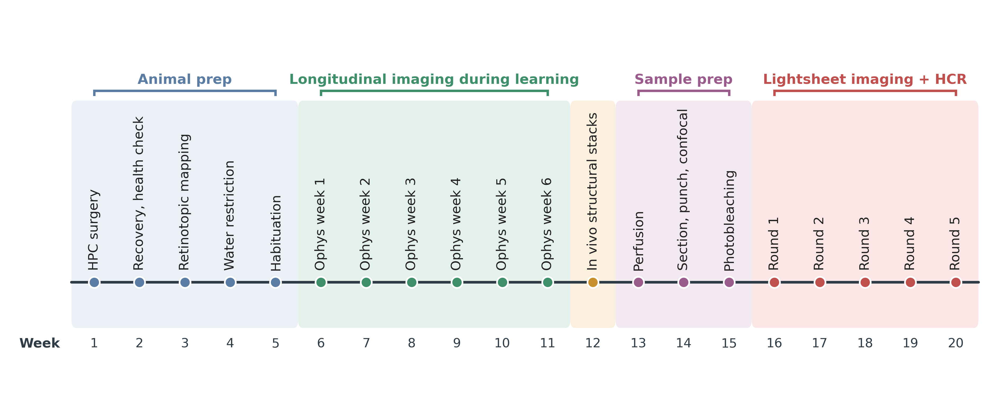
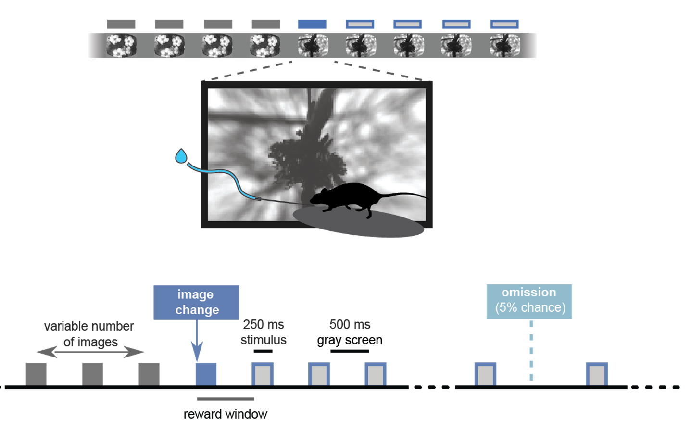

Visual Learning — the ophys + behavior NWB files
A reference for what is in each session file, where to find it, and what it means
What this notebook is
Every Visual Learning imaging session is packaged as a single NWB file containing the neural activity, the behavior, the stimulus, and the metadata describing how the session was run. This notebook is a reference for that file: it opens one session, walks through every container in turn, explains what each table and array holds and how to interpret it, and plots it.
It is organized so you can read it start to finish once, then come back and jump to whichever section describes the piece you need.
Part |
What it covers |
|---|---|
1 |
The experimental design — what was recorded and why the session types exist |
2 |
The session metadata table: finding sessions before opening any file |
3 |
Opening an NWB file and mapping its top-level containers |
4 |
Metadata inside the file: subject, imaging planes, task parameters |
5 |
|
6 |
|
7 |
The |
8 |
The |
9 |
Everything on one clock — putting the pieces together |
10 |
The other session types — what changes, and what to watch out for |
11 |
Quick reference and caveats |
Companion notebooks. Tutorial-VisualLearning-CellTypes-and-Physiology.ipynb uses these files to
ask a scientific question and adds the transcriptomic cell types. This notebook stays inside the NWB
and does not touch the coregistration or gene expression data.
This is pre-release data. Data collection is ongoing and these files are not final. Part 11 collects the known rough edges in one place.
Part 1: The experiment
The Visual Learning dataset asks how inhibitory neurons in visual cortex change as an animal learns a visual task. Three choices define it:
The same neurons are imaged every day, through the entire learning process — from the first naive session to expert performance, several weeks later.
All inhibitory neurons are labeled at once. Mice are
Slc32a1-IRES-Cre;Oi1, expressing GCaMP8s in every inhibitory neuron (Slc32a1is also known as VGAT). This is deliberately not a cell-type-specific driver line.Cell type is recovered afterwards, from gene expression. After in vivo imaging is finished, the brain is sectioned and probed for 18–24 genes using HCR spatial transcriptomics, and those cells are registered back onto the imaged neurons.
Point 3 is the important difference from the Visual Behavior Ophys dataset, which this one otherwise closely resembles. In Visual Behavior, cell type comes from the Cre line, so one experiment gives you one cell type. Here, type is a measurement rather than a property of the preparation, which means several inhibitory types are recorded simultaneously in the same field of view — and questions about interactions between types become askable.
Imaging uses a mesoscope: 8 planes in primary visual cortex (VISp) at depths from roughly 20 to 350 µm, spanning layer 1 through upper layer 5, each sampled at about 10–11 Hz.

The experiment end to end. Weeks 6–11 are the sessions in these NWB files; everything after week 12 produces the transcriptomic data covered in a separate notebook.
The task: change detection
Throughout learning the mouse performs a visual change detection task. A stimulus is flashed repeatedly — 250 ms on, 500 ms of gray screen, so one flash every 750 ms — and at an unpredictable time the stimulus identity changes. Licking within a short response window after a change earns a water reward.
Three details shape almost every analysis of this data:
The change time is drawn from a geometric distribution, 4 to 12 flashes after the start of the trial. The mouse therefore cannot time the change; it has to detect it.
Licking before the change aborts the trial. Aborted trials are usually the single most common outcome. An abort is a genuine error — the mouse licked instead of waiting for the change — but licking early is cheap and the mouse is thirsty, so even a well-trained animal aborts constantly. An abort also cancels that trial’s scheduled change, so the number of flashes between the changes the mouse actually sees is longer, and far more variable, than 4–12.
In the post-criterion
OPHYS_sessions, 5% of flashes are omitted — the gray screen simply continues where a flash was due. Omissions are not part of the task and carry no reward contingency, but they produce a striking response in visual cortex and are one of the most-used conditions in this dataset.

One trial of the change detection task. Gray boxes are flashes of one image; the blue box is the image change. The reward window opens shortly after the change. Later in training, 5% of flashes are omitted.
The curriculum, and what session_type means
Mice move through a training curriculum borrowed wholesale from Visual Behavior Ophys, and the
session_type names came with it. That inheritance causes one predictable misunderstanding, so it
is worth stating plainly:
Every session in this dataset has two-photon imaging, including the ones whose name starts with
TRAINING_.
In Visual Behavior, mice were trained in a behavior box and only later placed under the microscope,
so TRAINING_ really did mean “no physiology”. Here it does not. The prefix marks a behavioral
boundary: by the time a mouse reaches OPHYS_, it has hit criterion performance on the natural-image
version of the task. Physiology is collected the whole way through, which is the entire point of the
experiment.
The stages, in the order a mouse meets them:
Stage |
Stimulus |
What is new |
|---|---|---|
|
static gratings |
Short session, every change is auto-rewarded. Teaching the mouse that licking gets water. |
|
static gratings |
Full session; the mouse must now lick to earn reward. |
|
flashed gratings |
The 250 ms on / 500 ms off flash cycle is introduced. |
|
natural images, set A |
Natural images replace gratings. Larger reward volume. |
|
natural images, set A |
Standard reward volume. |
|
natural images, set A |
A 5-minute natural movie (“fingerprint”) is appended after the task. Suffixes |
|
natural images, set A |
Flash omissions begin. Images are familiar by now. |
|
natural images, set B |
Novel images. Same task, images the mouse has never seen. |
|
natural images, set B |
Set B is now familiar. |
|
natural movie clips |
Passive. No task, no licking, no reward. |
|
drifting gratings |
Passive. Contrast and temporal-frequency blocks, plus spontaneous gray screen. |
STAGE_0 and STAGE_1 come after the task sessions and are the dataset’s own addition —
they exist to characterize the same neurons with classical visual stimuli. They have no counterpart
in Visual Behavior, and because there is no task their files are shaped differently. Part 10 covers
this.
Setup
Everything here uses pynwb directly. There is no SDK for this dataset — if you have used the
AllenSDK for Visual Behavior, this is the main practical difference.
import os
import glob
import numpy as np
import pandas as pd
import pynwb
import matplotlib.pyplot as plt
from matplotlib import patches
# Show wide tables without pandas hiding the middle columns.
pd.set_option('display.width', 200)
pd.set_option('display.max_columns', 40)
pd.set_option('display.max_colwidth', 30)
plt.rcParams.update({
'font.size': 12, 'axes.titlesize': 13, 'axes.labelsize': 12,
'xtick.labelsize': 11, 'ytick.labelsize': 11, 'legend.fontsize': 11,
'figure.dpi': 100, 'axes.spines.top': False, 'axes.spines.right': False,
})
# Code Ocean mounts every attached data asset read-only under /data.
data_dir = '/data'
# The NWB files live in this asset, one directory per session. Which sessions those
# are comes from the metadata table in Part 2, not from listing this directory.
dataset_dir = os.path.join(data_dir, 'Visual-Learning-SWDB')
print('NWB asset:', dataset_dir)
NWB asset: /data/Visual-Learning-SWDB
Part 2: The session metadata table
Before opening any NWB file, start with the session metadata table. It has one row per session across the whole dataset, so it is how you answer “which sessions do I want?” without touching the data. Filenames will not tell you what stage a session was.
It also defines the dataset: the sessions in this table are the sessions to analyze. Select from it rather than listing the data directory, and the session counts, the curriculum and the per-mouse histories below all follow from one consistent set.
session_metadata = pd.read_csv(
os.path.join(data_dir, 'metadata', 'visual_learning_session_metadata.csv'))
print('sessions:', len(session_metadata))
print('mice :', sorted(session_metadata['subject_id'].unique()))
print()
print('columns :')
for column in session_metadata.columns:
print(' ', column)
---------------------------------------------------------------------------
FileNotFoundError Traceback (most recent call last)
Cell In[2], line 1
----> 1 session_metadata = pd.read_csv(
2 os.path.join(data_dir, 'metadata', 'visual_learning_session_metadata.csv'))
4 print('sessions:', len(session_metadata))
5 print('mice :', sorted(session_metadata['subject_id'].unique()))
File /opt/envs/anndata/lib/python3.12/site-packages/pandas/io/parsers/readers.py:1026, in read_csv(filepath_or_buffer, sep, delimiter, header, names, index_col, usecols, dtype, engine, converters, true_values, false_values, skipinitialspace, skiprows, skipfooter, nrows, na_values, keep_default_na, na_filter, verbose, skip_blank_lines, parse_dates, infer_datetime_format, keep_date_col, date_parser, date_format, dayfirst, cache_dates, iterator, chunksize, compression, thousands, decimal, lineterminator, quotechar, quoting, doublequote, escapechar, comment, encoding, encoding_errors, dialect, on_bad_lines, delim_whitespace, low_memory, memory_map, float_precision, storage_options, dtype_backend)
1013 kwds_defaults = _refine_defaults_read(
1014 dialect,
1015 delimiter,
(...)
1022 dtype_backend=dtype_backend,
1023 )
1024 kwds.update(kwds_defaults)
-> 1026 return _read(filepath_or_buffer, kwds)
File /opt/envs/anndata/lib/python3.12/site-packages/pandas/io/parsers/readers.py:620, in _read(filepath_or_buffer, kwds)
617 _validate_names(kwds.get("names", None))
619 # Create the parser.
--> 620 parser = TextFileReader(filepath_or_buffer, **kwds)
622 if chunksize or iterator:
623 return parser
File /opt/envs/anndata/lib/python3.12/site-packages/pandas/io/parsers/readers.py:1620, in TextFileReader.__init__(self, f, engine, **kwds)
1617 self.options["has_index_names"] = kwds["has_index_names"]
1619 self.handles: IOHandles | None = None
-> 1620 self._engine = self._make_engine(f, self.engine)
File /opt/envs/anndata/lib/python3.12/site-packages/pandas/io/parsers/readers.py:1880, in TextFileReader._make_engine(self, f, engine)
1878 if "b" not in mode:
1879 mode += "b"
-> 1880 self.handles = get_handle(
1881 f,
1882 mode,
1883 encoding=self.options.get("encoding", None),
1884 compression=self.options.get("compression", None),
1885 memory_map=self.options.get("memory_map", False),
1886 is_text=is_text,
1887 errors=self.options.get("encoding_errors", "strict"),
1888 storage_options=self.options.get("storage_options", None),
1889 )
1890 assert self.handles is not None
1891 f = self.handles.handle
File /opt/envs/anndata/lib/python3.12/site-packages/pandas/io/common.py:873, in get_handle(path_or_buf, mode, encoding, compression, memory_map, is_text, errors, storage_options)
868 elif isinstance(handle, str):
869 # Check whether the filename is to be opened in binary mode.
870 # Binary mode does not support 'encoding' and 'newline'.
871 if ioargs.encoding and "b" not in ioargs.mode:
872 # Encoding
--> 873 handle = open(
874 handle,
875 ioargs.mode,
876 encoding=ioargs.encoding,
877 errors=errors,
878 newline="",
879 )
880 else:
881 # Binary mode
882 handle = open(handle, ioargs.mode)
FileNotFoundError: [Errno 2] No such file or directory: '/data/metadata/visual_learning_session_metadata.csv'
What the columns mean
The table is generated from aind-data-schema v2 metadata, so some names differ from older Allen Institute datasets.
Column |
Meaning |
|---|---|
|
which mouse |
|
the acquisition name, |
|
the full processed asset name, |
|
the training or imaging stage — the column you will filter on most |
|
the v2 name for the same thing; both columns are present and agree |
|
just the prefix of |
|
which natural image set ( |
|
order of acquisition within a mouse, starting at 1 |
|
when it was collected |
|
subject facts, repeated on every row |
|
which mesoscope, e.g. |
|
the project the session was collected under (this varies across mice) |
|
the imaging planes and their depths in µm |
|
QC: planes where the imaging depth drifted during the session |
|
provenance of the processed asset |
Two things to know before indexing into it:
plane_names,imaging_depths,targeted_structuresandplanes_failing_zdriftare Python lists that were written to CSV as text. They come back as strings like"['VISp_0', 'VISp_1']". Useast.literal_evalto turn them back into lists.imaging_depthsis inplane_namesorder, not sorted by depth. Pair them positionally.
# One row per session. Note the string-encoded list columns.
session_metadata.head(3)
The dimensions of the dataset
Three numbers describe the shape of the whole thing: how many mice, how many sessions each, and how many sessions of each type.
print('sessions per mouse:')
print(session_metadata['subject_id'].value_counts().sort_index().to_string())
print()
print('sessions per session_type:')
print(session_metadata['session_type'].value_counts().to_string())
# Sessions per mouse per stage: the curriculum, as a table. Mice differ in how many
# days they needed at each stage, which is what learning at different rates looks like.
stage_order = ['TRAINING_0', 'TRAINING_1', 'TRAINING_2', 'TRAINING_3', 'TRAINING_4',
'TRAINING_5', 'OPHYS_1', 'OPHYS_4', 'OPHYS_6', 'STAGE_0', 'STAGE_1']
sessions_per_stage = (session_metadata
.pivot_table(index='subject_id', columns='stage',
values='session_number', aggfunc='count')
.reindex(columns=stage_order)
.fillna(0).astype(int))
sessions_per_stage
Every mouse is imaged with 8 planes in VISp, and the depths are chosen per session. Because
the planes are re-targeted each day, the depth of VISp_3 is not the same number in every session
— always read depths from the row rather than assuming them.
import ast
# Depths across the dataset. Each row's imaging_depths is a text-encoded list.
all_depths = np.concatenate([ast.literal_eval(depths)
for depths in session_metadata['imaging_depths'].dropna()])
print('planes per session:', session_metadata['n_planes'].value_counts().to_dict())
print('targeted structures:', session_metadata['targeted_structures'].unique())
print(f'imaging depths: {all_depths.min()} to {all_depths.max()} um')
print()
print('z-drift QC -- planes failing per session:')
print(session_metadata['n_planes_failing_zdrift'].value_counts(dropna=False).sort_index().to_string())
planes_failing_zdrift is the one QC column in this table you should look at before analyzing a
session. It names the planes where the imaging depth moved during the session, which means the
neurons in those planes are not the same neurons throughout. Most sessions have none; a few have
several, and one session below has all 8.
NaN means the check was not run for that session, which is not the same as passing.
# Sessions where z-drift QC flagged at least one plane.
flagged = session_metadata[session_metadata['n_planes_failing_zdrift'] > 0]
print(f'{len(flagged)} of {len(session_metadata)} sessions have at least one flagged plane')
print(f"{session_metadata['n_planes_failing_zdrift'].isna().sum()} sessions were not checked")
flagged[['subject_id', 'session_date', 'session_type',
'n_planes_failing_zdrift', 'planes_failing_zdrift']].head(10)
One mouse's history
The rest of this notebook follows mouse 800995, which has 22 sessions covering 12 of the 13 session types. Plotting its sessions against date, colored by the stimulus it saw, gives the whole experiment for one animal in a single panel — including the gaps, which are real.
mouse = 800995
mouse_sessions = (session_metadata[session_metadata['subject_id'] == mouse]
.sort_values('session_number')
.reset_index(drop=True))
mouse_sessions[['session_number', 'session_date', 'session_type', 'image_set',
'age_days', 'n_planes', 'n_planes_failing_zdrift']]
# Group session types by WHAT THE MOUSE SAW rather than by name prefix, so the plot
# reads as the curriculum.
def stimulus_category(session_type):
if session_type == 'STAGE_0':
return 'passive natural movies'
if session_type == 'STAGE_1':
return 'passive drifting gratings'
if session_type == 'OPHYS_1_images_A':
return 'familiar images (A)'
if session_type == 'OPHYS_4_images_B':
return 'novel images (B)'
if session_type == 'OPHYS_6_images_B':
return 'familiar images (B)'
if 'gratings_flashed' in session_type:
return 'flashed gratings'
if 'gratings' in session_type:
return 'static gratings'
return 'training images (A)'
stimulus_colors = {'static gratings': '#54B166',
'flashed gratings': '#BCE4B6',
'training images (A)': '#F2503C',
'familiar images (A)': '#FCAF94',
'novel images (B)': '#559ECB',
'familiar images (B)': '#BCD6ED',
'passive natural movies': '#B0ABAA',
'passive drifting gratings': '#767171'}
categories = mouse_sessions['session_type'].map(stimulus_category)
dates = pd.to_datetime(mouse_sessions['session_date'])
fig, ax = plt.subplots(figsize=(13, 4))
for category, color in stimulus_colors.items():
in_category = (categories == category).values
if not in_category.any():
continue
ax.scatter(dates[in_category], mouse_sessions.loc[in_category, 'session_number'],
s=140, color=color, edgecolor='0.3', linewidth=0.6, label=category, zorder=3)
ax.set_xlabel('date')
ax.set_ylabel('session number')
ax.set_title(f'Mouse {mouse}: {len(mouse_sessions)} sessions, every one with 8-plane imaging')
ax.legend(bbox_to_anchor=(1.01, 1.0), loc='upper left', frameon=False)
ax.grid(axis='y', alpha=0.2)
fig.autofmt_xdate()
plt.tight_layout()
plt.show()
This mouse moves through the curriculum in order, but the spacing is uneven. The small regular gaps
are weekends. The two larger ones are in September: a week between the second and third OPHYS_6
sessions, then ten days before the mouse comes back for the passive STAGE_ sessions at the end.
None of that is an error, and other mice look different again — some repeat a stage many times,
some return to an earlier one. That is the reason to select sessions by querying this table rather
than by assuming a sequence.
Part 3: Opening an NWB file
The session this notebook walks through is the first OPHYS_4_images_B session for mouse
800995 — a post-criterion session with novel natural images, flash omissions, and the
fingerprint movie at the end. It is the most feature-complete session type in the dataset, which is
why it makes the best reference: everything described in Parts 4–9 is present in this one file.
Select it by querying the metadata table rather than hardcoding a date, so the same code works for any mouse.
session_type = 'OPHYS_4_images_B'
matching = mouse_sessions[mouse_sessions['session_type'] == session_type]
print(f'{len(matching)} {session_type} sessions for mouse {mouse}')
# The FIRST one. For OPHYS_4 this matters: only the first exposure to image set B is novel.
session = matching.iloc[0]
print('selected :', session['session_id'])
print('session :', session['session_number'], 'of', len(mouse_sessions))
print('date :', session['session_date'], '| age', session['age_days'], 'days')
print('rig :', session['rig'])
print('planes :', session['n_planes'], '| failing z-drift:', session['n_planes_failing_zdrift'])
Finding the file on disk
Each session is a directory named by the metadata table’s name column, inside the
Visual-Learning-SWDB asset. Inside it, the data is a .nwb.zarr store — a directory, not
a single file — alongside JSON sidecars carrying the raw aind-data-schema metadata.
pynwb.read_nwb() opens either a .nwb HDF5 file or a .nwb.zarr store, so match on nwb and
exclude the .json sidecars rather than hardcoding the extension.
session_dir = os.path.join(dataset_dir, session['name'])
print(session_dir)
print()
for entry in sorted(os.listdir(session_dir)):
kind = 'dir ' if os.path.isdir(os.path.join(session_dir, entry)) else 'file'
print(f' {kind} {entry}')
# One store per session directory.
nwb_stores = [entry for entry in os.listdir(session_dir)
if 'nwb' in entry and not entry.endswith('.json')]
assert len(nwb_stores) == 1, f'expected one NWB store, found {nwb_stores}'
nwb_path = os.path.join(session_dir, nwb_stores[0])
nwb = pynwb.read_nwb(nwb_path)
print(type(nwb).__name__, 'opened from', os.path.basename(nwb_path))
The top-level containers
An NWB file is a set of named containers. Printing the object gives a full recursive dump, which is useful once and overwhelming after that — the more practical first move is to list what each container holds.
Container |
What is in it for this dataset |
|---|---|
|
the bulk of the data: one module per imaging plane ( |
|
things with a duration: |
|
things that happen at an instant: licks, rewards, image changes, image omissions |
|
the raw running-wheel encoder voltages |
|
empty — the stimulus templates (the images themselves) are not in these files |
|
the task parameters, and one empty placeholder per plane |
|
empty |
print('processing :', list(nwb.processing.keys()))
print('intervals :', list(nwb.intervals.keys()))
print('events :', list(nwb.events.keys()) if nwb.events else [])
print('acquisition :', list(nwb.acquisition.keys()))
print('stimulus :', list(nwb.stimulus.keys()))
print('lab_meta_data:', list(nwb.lab_meta_data.keys()))
print('analysis :', list(nwb.analysis.keys()))
The empty stimulus container is worth noting explicitly because it is where you would look for the
natural image templates by habit. They are not in these files. The image set is named in the task
parameters (Part 4), and the image identities appear as strings like im075 in the stimulus table,
but the pixel arrays live elsewhere.
Part 4: The metadata inside the file
Some of this repeats the session metadata table, which is a feature — it lets you confirm you opened the file you meant to. The rest, particularly the task parameters, exists only here.
print('session_id :', nwb.session_id)
print('identifier :', nwb.identifier)
print('session_start_time:', nwb.session_start_time)
print('institution :', nwb.institution)
print('experimenter :', nwb.experimenter)
print()
print('session_description:')
print(' ', nwb.session_description)
session_start_time is the wall-clock start of the session, with timezone. Every timestamp in
the file is in seconds relative to this, on a single hardware sync clock shared by the imaging,
the stimulus, and the behavior. That shared clock is what makes all the alignment in Part 9 possible,
and it is the single most important fact about timing in these files.
The session_description string is auto-generated and says “A Unknown Project” for most sessions.
Ignore it; session_type in the metadata table and in the task parameters is the reliable source.
# The subject. Genotype names the driver line and the reporter carrying GCaMP8s.
nwb.subject
Imaging planes
There is one ImagingPlane per plane, describing the optics. The imaging depth is embedded in a
free-text location string ('Structure: VISp Depth: 154') rather than stored as a number, so
prefer the metadata table’s parsed imaging_depths column when you need it as a value.
indicator is populated with the genotype rather than the indicator name, which is a known quirk of
these files — the indicator is jGCaMP8s in every session.
plane_names = ast.literal_eval(session['plane_names'])
imaging_depths = ast.literal_eval(session['imaging_depths'])
# imaging_depths follows plane_names order, so pair positionally.
depth_of_plane = dict(zip(plane_names, imaging_depths))
print(f'{"plane":8s} {"depth (metadata)":>17s} NWB location string')
for plane_name in plane_names:
imaging_plane = nwb.imaging_planes[plane_name]
print(f'{plane_name:8s} {depth_of_plane[plane_name]:>13d} um {imaging_plane.location!r}')
# The optics, from one plane. These are the same for every plane in a session.
imaging_plane = nwb.imaging_planes['VISp_0']
print('device :', imaging_plane.device.name, '|', imaging_plane.device.description)
print('manufacturer :', imaging_plane.device.manufacturer)
print('excitation :', imaging_plane.excitation_lambda, 'nm')
print('emission :', imaging_plane.optical_channel[0].emission_lambda, 'nm')
print('imaging_rate :', imaging_plane.imaging_rate, 'Hz')
print('indicator :', imaging_plane.indicator)
print('grid_spacing :', np.asarray(imaging_plane.grid_spacing[:]), imaging_plane.unit)
Task parameters
lab_meta_data['task_parameters'] records how the behavior session was configured. This has no
equivalent in the session metadata table, and it is the authoritative answer to questions like “how
long was a flash”, “what was the reward volume”, “were omissions on”, and “which image set”.
Reading it is the fastest way to know what kind of session you are holding, and comparing it across session types (Part 10) shows exactly what the curriculum changes from stage to stage.
task_parameters = nwb.lab_meta_data['task_parameters']
# fields is a plain dict. A couple of entries are arrays, so read those explicitly.
for name in sorted(task_parameters.fields):
value = getattr(task_parameters, name)
if hasattr(value, 'shape'): # zarr array, e.g. response_window_sec
value = np.asarray(value[:])
print(f' {name:28s} {value}')
The entries that matter most in practice:
Parameter |
This session |
What it means |
|---|---|---|
|
|
agrees with the metadata table |
|
|
natural images, not gratings |
|
|
image set B. Set A is |
|
0.25 / 0.5 |
the 750 ms flash cycle |
|
0.05 |
omissions are on. Absent in |
|
4 / 12 |
the change is drawn 4–12 flashes into the trial |
|
|
flat hazard, so the change stays unpredictable |
|
|
licks in this window after a change count as a hit |
|
0.007 |
earned reward. |
|
5 / 10000 |
trials at the start that are made easier |
|
|
catch trials are inferred, not explicitly scheduled |
|
|
the natural movie appended after the task |
|
0.3 |
penalty after an early lick |
|
5.0 |
the session ends if the mouse earns this much |
min_no_lick_time_sec, pre_change_time_sec and end_after_response_sec shape trial boundaries;
failure_repeats controls whether a missed change is repeated with the same image.
Part 5: processing[plane] — the physiology
The neural data is in the processing container, with one module per imaging plane. There is no
session-wide activity array: the mesoscope visits the 8 planes in sequence, so each plane has its own
data, its own ROIs, and — importantly — its own timestamps.
# The plane modules, plus 'running'. Plane names come from the metadata table.
print('processing modules:', list(nwb.processing.keys()))
print()
plane = 'VISp_0'
print(f'inside processing[{plane!r}]:')
for interface_name, interface in nwb.processing[plane].data_interfaces.items():
print(f' {interface_name:36s} {type(interface).__name__}')
Five representations of the same activity
Each plane carries the calcium signal at five successive stages of processing. They all have the
same shape — (n_frames, n_ROIs) — and share the plane’s timestamps, so you can swap one
for another without changing any alignment code.
Interface |
Access |
Units |
What it is |
|---|---|---|---|
|
|
a.u. |
mean pixel intensity inside each ROI mask, straight from the movie |
|
|
a.u. |
the same for the surrounding neuropil ring |
|
|
a.u. |
raw − r × neuropil, with r fit per ROI |
|
|
see below |
ΔF/F: corrected trace relative to its own running baseline |
|
|
a.u. |
deconvolved events — a sparse estimate of when spiking occurred |
Two of the five are wrapped in an extra container (DfOverF and Fluorescence respectively), which
is why their access pattern has the name twice. The other three are bare RoiResponseSeries.
Which to use. dff_timeseries for most analyses — normalizing by each neuron’s own
baseline makes a bright neuron and a dim one comparable. event_timeseries when you want temporal
precision or a sparse signal, at the cost of depending on the deconvolution. The three upstream
traces are there for diagnosing a suspicious cell, not for routine analysis.
# All five, for one plane. Note which two need the extra container name.
dff_series = nwb.processing[plane]['dff_timeseries']['dff_timeseries']
raw_series = nwb.processing[plane]['raw_timeseries']['roi_fluorescence_timeseries']
neuropil_series = nwb.processing[plane]['neuropil_fluorescence_timeseries']
corrected_series = nwb.processing[plane]['neuropil_corrected_timeseries']
event_series = nwb.processing[plane]['event_timeseries']
for name, series in [('raw', raw_series), ('neuropil', neuropil_series),
('neuropil corrected', corrected_series), ('dff', dff_series),
('deconvolved events', event_series)]:
print(f'{name:20s} {str(series.data.shape):16s} {str(series.data.dtype):10s} unit={series.unit}')
Reading the data. Indexing a zarr array with [:] is what actually pulls it into memory —
until then you are holding a lazy reference. One plane of a 75-minute session is about
48,000 frames × 66 ROIs, which is small; all eight planes at once is still only tens of
megabytes, so there is no need to be clever about it.
dff = np.asarray(dff_series.data[:]) # (frames, ROIs)
timestamps = np.asarray(dff_series.timestamps[:]) # (frames,) seconds
raw = np.asarray(raw_series.data[:])
neuropil = np.asarray(neuropil_series.data[:])
corrected = np.asarray(corrected_series.data[:])
events = np.asarray(event_series.data[:])
frame_rate = 1 / np.median(np.diff(timestamps))
print(f'{plane}: {dff.shape[1]} ROIs, {dff.shape[0]} frames')
print(f'frame rate : {frame_rate:.2f} Hz')
print(f'session covered: {timestamps[0]:.1f} to {timestamps[-1]:.1f} s '
f'({timestamps[-1] / 60:.1f} min)')
Seeing all five stacked for one neuron is the fastest way to understand what each is. The raw trace sits on a large offset; the neuropil trace shares its slow structure (which is exactly why it is subtracted); ΔF/F removes the offset and the slow drift; the deconvolved events are zero almost everywhere.
# A neuron with clear transients, chosen rather than taken at index 0: highest 99th
# percentile relative to a robust noise estimate.
noise = np.median(np.abs(dff - np.median(dff, axis=0)), axis=0) * 1.4826
example_roi = int(np.argmax(np.percentile(dff, 99, axis=0) / noise))
# A 90 s window in the middle of the task, so individual transients are separable.
window = (1500, 1590)
in_window = (timestamps >= window[0]) & (timestamps <= window[1])
stages = [('raw fluorescence', raw, '0.4'),
('neuropil', neuropil, 'tab:orange'),
('neuropil corrected', corrected, 'tab:purple'),
(r'$\Delta$F/F', dff, 'black'),
('deconvolved events', events, 'tab:red')]
fig, axes = plt.subplots(len(stages), 1, figsize=(12, 8), sharex=True)
for ax, (label, signal, color) in zip(axes, stages):
ax.plot(timestamps[in_window], signal[in_window, example_roi], color=color, lw=0.9)
ax.set_ylabel(label, fontsize=10)
axes[0].set_title(f'{plane}, ROI {example_roi}: the same neuron at five processing stages')
axes[-1].set_xlabel('time in session (s)')
plt.tight_layout()
plt.show()
What the numbers look like
Worth checking once so you know what to expect, and so a later result that disagrees is a red flag rather than a mystery.
Note the unit label on dff_timeseries is %, but the values are fractional — a
ΔF/F of 1.0 is a doubling, not 1%. Treat the label as wrong and the numbers as fractions.
print('dF/F across all ROIs and frames:')
for label, value in [('min', np.nanmin(dff)), ('1st pct', np.nanpercentile(dff, 1)),
('median', np.nanmedian(dff)), ('99th pct', np.nanpercentile(dff, 99)),
('max', np.nanmax(dff))]:
print(f' {label:10s} {value:8.3f}')
print()
print(f'fraction of dF/F samples exactly zero : {np.mean(dff == 0):.4f}')
print(f'fraction of event samples exactly zero : {np.mean(events == 0):.4f}')
print(f'ROIs that are entirely NaN : {int(np.isnan(dff).all(axis=0).sum())}')
The sparsity difference is the whole point of the deconvolved events: about 89% of the event samples are exactly zero, against none of the ΔF/F samples.
Check for all-NaN ROIs before analyzing. A neuron whose trace is entirely NaN will silently poison a mean over cells. There are none in this session, but there are in others.
Timestamps: one clock, four sampling times
Every plane’s timestamps are on the same session clock as the behavior and the stimulus, so alignment across modalities works without any conversion. But the planes are not all sampled at the same instant. The mesoscope images two planes at once — one shallow, one deep — and then steps to the next pair, so the eight planes are four simultaneous pairs, each pair acquired about 23 ms after the one before it. Four steps of 23 ms is the 93 ms frame interval.
The offsets are tens of milliseconds, which is small against the 750 ms flash cycle and against the calcium indicator’s own kinetics. It is not small against a spike. The safe habit is to align each plane using its own timestamps, which costs nothing, rather than concatenating planes and using one shared time vector.
# Read every plane's timestamps and measure the offset from the first plane, frame by frame.
plane_timestamps = {}
for plane_name in plane_names:
series = nwb.processing[plane_name]['dff_timeseries']['dff_timeseries']
plane_timestamps[plane_name] = np.asarray(series.timestamps[:])
reference = plane_timestamps[plane_names[0]]
print(f'frame interval: {1000 * np.median(np.diff(reference)):.2f} ms '
f'({1 / np.median(np.diff(reference)):.2f} Hz)')
print()
print(f'{"plane":8s} {"depth":>7s} {"n frames":>9s} {"offset from " + plane_names[0]:>22s}')
for plane_name in plane_names:
offset_ms = (plane_timestamps[plane_name] - reference) * 1000
print(f'{plane_name:8s} {depth_of_plane[plane_name]:>5d}um '
f'{len(plane_timestamps[plane_name]):>9d} {np.median(offset_ms):>19.1f} ms')
Segmentation: image_segmentation
ROIs were found with suite2p (in anatomical mode, seeded by cellpose). The results are two
PlaneSegmentation tables per plane:
roi_table— one row per segmented ROI: the classifier outputs, suite2p’s shape statistics, and the ROI’s spatial mask.neuropil_table— the matching neuropil ring for each ROI, plus the correction coefficient used.
The link between these tables and the activity array is row order. Row i of roi_table is
column i of dff. Assert that the lengths match once, then convert position into a name if you are
going to carry the association anywhere.
segmentation = nwb.processing[plane]['image_segmentation']
print('plane segmentations:', list(segmentation.plane_segmentations.keys()))
roi_table_object = segmentation.plane_segmentations['roi_table']
roi_table = roi_table_object.to_dataframe()
# The positional contract, checked once.
assert len(roi_table) == dff.shape[1], 'ROI table and dF/F disagree on the number of ROIs'
print(f'\nroi_table: {roi_table.shape[0]} ROIs x {roi_table.shape[1]} columns')
print('description:', roi_table_object.description)
# Every column, with the description stored in the file itself.
for column in roi_table_object.columns:
print(f' {column.name:28s} {column.description}')
Reading the ROI table
Column |
What it is |
How to use it |
|---|---|---|
|
classifier call and its probability that the ROI is a cell body |
|
|
the same for dendritic segments |
dendrites are real signal but not a cell; usually excluded |
|
mean cellpose cell-probability under the ROI footprint |
a second, independent opinion. |
|
suite2p shape statistics |
for building your own filter, or spotting merged ROIs |
|
a 512 × 512 weight map, one per ROI |
not boolean — the values are pixel weights. Threshold at |
The classifier is not conservative: in this plane most ROIs are called somata. Whether to filter on
is_soma, on a stricter soma_probability threshold, or on cellpose agreement is an analysis
decision, so it is worth looking at the distributions before choosing.
roi_table[['is_soma', 'soma_probability', 'is_dendrite', 'dendrite_probability',
'cellpose_soma_probability', 'aspect_ratio', 'compact', 'solidity',
'radius', 'footprint']].head()
n_roi = len(roi_table)
print(f'{plane}: {n_roi} ROIs')
print(f' is_soma : {int(roi_table["is_soma"].sum()):3d}')
print(f' is_dendrite : {int(roi_table["is_dendrite"].sum()):3d}')
print(f' cellpose > 0.5: {int((roi_table["cellpose_soma_probability"] > 0.5).sum()):3d}')
print(f' cellpose NaN : {int(roi_table["cellpose_soma_probability"].isna().sum()):3d}')
fig, axes = plt.subplots(1, 3, figsize=(13, 3.2))
axes[0].hist(roi_table['soma_probability'], bins=20, color='0.4')
axes[0].axvline(0.5, color='tab:red', ls='--')
axes[0].set_xlabel('soma_probability')
axes[0].set_ylabel('ROIs')
axes[1].hist(roi_table['cellpose_soma_probability'].dropna(), bins=20, color='0.4')
axes[1].set_xlabel('cellpose_soma_probability')
axes[2].scatter(roi_table['soma_probability'], roi_table['cellpose_soma_probability'],
s=18, alpha=0.6, color='tab:blue')
axes[2].set_xlabel('soma_probability')
axes[2].set_ylabel('cellpose_soma_probability')
axes[2].set_title('two classifiers, one ROI set', fontsize=11)
plt.tight_layout()
plt.show()
Projection images and ROI masks
The images interface holds four 512 × 512 images summarizing the whole session’s movie for
this plane.
Image |
What it is |
What it is for |
|---|---|---|
|
maximum pixel value across every frame |
the standard anatomical reference. Active cells appear bright because their peak transient is retained |
|
mean across every frame |
structural: shows the vasculature and dim cells, but not weakly active ones |
|
all ROI masks rendered into one image |
check the segmentation at a glance |
|
the neuropil rings rendered the same way |
shows the annulus around each ROI |
images = nwb.processing[plane]['images']
print('images:', list(images.images.keys()))
for image_name, image in images.images.items():
array = np.asarray(image.data)
print(f' {image_name:24s} {str(array.shape):12s} {array.dtype} {image.description}')
max_projection = np.asarray(images['max_projection'].data)
average_projection = np.asarray(images['average_projection'].data)
segmentation_image = np.asarray(images['segmentation_mask_image'].data)
neuropil_image = np.asarray(images['neuropil_mask_image'].data)
fig, axes = plt.subplots(1, 4, figsize=(15, 4))
for ax, (label, image) in zip(axes, [('max projection', max_projection),
('average projection', average_projection),
('segmentation masks', segmentation_image),
('neuropil masks', neuropil_image)]):
ax.imshow(image, cmap='gray', vmax=np.percentile(image, 99.5))
ax.set_title(label, fontsize=11)
ax.axis('off')
fig.suptitle(f'{plane}, {depth_of_plane[plane]} um deep', y=1.02)
plt.tight_layout()
plt.show()
The masks themselves are per-ROI, in the image_mask column. Each is a full-frame weight array
— mostly zeros, with non-zero values over the ROI’s pixels — so a footprint is
mask > 0, and the summed weight is roughly the ROI’s area.
Drawing them over the max projection is the single most useful sanity check on a plane: it shows whether the segmentation found the cells you can see.
masks = np.stack(roi_table['image_mask'].values) # (n_ROIs, 512, 512)
print('mask stack:', masks.shape, masks.dtype)
print(f'pixels per ROI: median {np.median((masks > 0).sum(axis=(1, 2))):.0f}, '
f'range {(masks > 0).sum(axis=(1, 2)).min()} to {(masks > 0).sum(axis=(1, 2)).max()}')
fig, axes = plt.subplots(1, 2, figsize=(12, 6))
for ax in axes:
ax.imshow(max_projection, cmap='gray', vmax=np.percentile(max_projection, 99.5))
ax.axis('off')
# Left: every ROI outlined, colored by whether the classifier called it a soma.
for roi_index in range(len(roi_table)):
footprint = masks[roi_index] > 0
color = 'tab:cyan' if roi_table['is_soma'].iloc[roi_index] else 'tab:red'
axes[0].contour(footprint, levels=[0.5], colors=color, linewidths=0.7)
axes[0].set_title('all ROIs: soma (cyan) vs not (red)', fontsize=11)
# Right: the example neuron alone, so its mask can be seen against the image.
axes[1].contour(masks[example_roi] > 0, levels=[0.5], colors='magenta', linewidths=1.5)
axes[1].set_title(f'ROI {example_roi}, the neuron plotted above', fontsize=11)
plt.tight_layout()
plt.show()
neuropil_table
One row per ROI, matching roi_table row for row. image_mask here is the neuropil ring around
that ROI, and neuropil_r_value is the coefficient r used in
corrected = raw - r * neuropil.
r is fit per ROI and is capped at 1. Values at the cap mean the fit wanted to subtract at least all of the neuropil, which usually indicates an ROI heavily contaminated by its surround — worth knowing when a trace looks odd.
neuropil_table = nwb.processing[plane]['image_segmentation'] \
.plane_segmentations['neuropil_table'].to_dataframe()
print('neuropil_table:', neuropil_table.shape, '| columns:', list(neuropil_table.columns))
print(f'neuropil_r_value: median {neuropil_table["neuropil_r_value"].median():.2f}, '
f'range {neuropil_table["neuropil_r_value"].min():.2f} to '
f'{neuropil_table["neuropil_r_value"].max():.2f}')
print(f'ROIs at the r = 1 cap: {int((neuropil_table["neuropil_r_value"] >= 0.99).sum())} '
f'of {len(neuropil_table)}')
neuropil_table[['neuropil_r_value']].head()
All eight planes at once
Everything above was one plane. Reading all eight is a short loop, and it is worth doing once to see how many neurons a session actually gives you and how they are distributed over depth.
plane_summary = []
for plane_name in plane_names:
plane_dff = nwb.processing[plane_name]['dff_timeseries']['dff_timeseries']
plane_roi_table = (nwb.processing[plane_name]['image_segmentation']
.plane_segmentations['roi_table'].to_dataframe())
plane_summary.append({
'plane': plane_name,
'depth_um': depth_of_plane[plane_name],
'n_roi': plane_dff.data.shape[1],
'n_soma': int(plane_roi_table['is_soma'].sum()),
'n_frames': plane_dff.data.shape[0],
'start_time_s': round(float(plane_timestamps[plane_name][0]), 3),
})
plane_summary = pd.DataFrame(plane_summary).sort_values('depth_um')
print('total ROIs in the session:', plane_summary['n_roi'].sum(),
'| called soma:', plane_summary['n_soma'].sum())
plane_summary
fig, ax = plt.subplots(figsize=(6, 4))
ax.barh(plane_summary['depth_um'], plane_summary['n_roi'], height=22,
color='0.75', label='all ROIs')
ax.barh(plane_summary['depth_um'], plane_summary['n_soma'], height=22,
color='tab:blue', label='called soma')
for _, row in plane_summary.iterrows():
ax.text(row['n_roi'] + 2, row['depth_um'], row['plane'], va='center', fontsize=9)
ax.invert_yaxis()
ax.set_xlabel('ROIs')
ax.set_ylabel('imaging depth (um)')
ax.set_title('Neurons by depth, layer 1 to upper layer 5')
ax.legend(frameon=False)
plt.tight_layout()
plt.show()
Part 6: processing['running'] and acquisition
Running speed is the one continuous behavioral measurement in these files. It sits in processing
alongside the imaging planes, because like the calcium traces it is a processed signal; the raw
voltages it was computed from are in acquisition.
There is no eye tracking or pupil diameter in this release. The session’s
data_description.json lists “Behavior videos” as a modality and the videos were collected, but
they have not been processed into these NWB files yet. Pupil is expected in a later release.
running_module = nwb.processing['running']
for name, series in running_module.data_interfaces.items():
print(f'{name:8s} {str(series.data.shape):14s} unit={series.unit}')
print(f' {series.description}')
print()
Signal |
Units |
What it is |
|---|---|---|
|
cm/s |
linear running speed, filtered. The one to use. |
|
cm |
the raw per-sample angular change from the encoder, before filtering |
speed’s description records the whole pipeline: unwrap the encoder voltage, convert to angular
change, convert to linear speed using the wheel geometry, clip wrap artifacts, reject 10-sigma
outliers, then low-pass at 4 Hz with a 3rd-order Butterworth filter. The timestamps are the sync
file’s vsync falling edges with no monitor-delay correction, because running is a behavioral
signal rather than a visual one.
Note the sampling rate: 60 Hz, about six times faster than the imaging. Running speed and ΔF/F are on the same clock but not on the same grid, so any comparison between them needs interpolation or binning — do not assume index i of one corresponds to index i of the other.
speed_series = running_module['speed']
running_speed = np.asarray(speed_series.data[:])
running_timestamps = np.asarray(speed_series.timestamps[:])
running_rate = 1 / np.median(np.diff(running_timestamps))
print(f'running: {len(running_speed)} samples at {running_rate:.1f} Hz')
print(f'imaging: {len(timestamps)} frames at {frame_rate:.1f} Hz')
print()
print(f'speed: median {np.median(running_speed):.2f} cm/s, '
f'99th pct {np.percentile(running_speed, 99):.1f} cm/s, '
f'max {running_speed.max():.1f} cm/s')
print(f'fraction of time above 1 cm/s: {np.mean(running_speed > 1):.2f}')
fig, axes = plt.subplots(2, 1, figsize=(12, 5))
axes[0].plot(running_timestamps / 60, running_speed, color='0.3', lw=0.4)
axes[0].set_ylabel('running speed\n(cm/s)')
axes[0].set_xlabel('time in session (min)')
axes[0].set_title('Running speed, whole session')
# The same signal over 90 s, where individual running bouts are visible.
in_window = (running_timestamps >= window[0]) & (running_timestamps <= window[1])
axes[1].plot(running_timestamps[in_window], running_speed[in_window], color='0.3', lw=1)
axes[1].set_ylabel('running speed\n(cm/s)')
axes[1].set_xlabel('time in session (s)')
axes[1].set_title(f'{window[1] - window[0]} s window')
plt.tight_layout()
plt.show()
acquisition: the raw encoder
Two voltage traces, at the same 60 Hz as speed. You need these only if you want to recompute
running speed yourself — for example with a different filter cutoff.
Signal |
What it is |
|---|---|
|
the rotary encoder’s output voltage. It wraps: the sawtooth is one full wheel rotation |
|
the encoder’s supply voltage, nominally 5 V, used to normalize the wrap |
v_sig = np.asarray(nwb.acquisition['v_sig'].data[:])
v_in = np.asarray(nwb.acquisition['v_in'].data[:])
voltage_timestamps = np.asarray(nwb.acquisition['v_sig'].timestamps[:])
print('v_sig:', nwb.acquisition['v_sig'].description)
print('v_in :', nwb.acquisition['v_in'].description)
fig, ax = plt.subplots(figsize=(12, 2.6))
in_window = (voltage_timestamps >= window[0]) & (voltage_timestamps <= window[0] + 20)
ax.plot(voltage_timestamps[in_window], v_sig[in_window], color='tab:green', lw=1, label='v_sig')
ax.plot(voltage_timestamps[in_window], v_in[in_window], color='0.6', lw=1, label='v_in')
ax.set_xlabel('time in session (s)')
ax.set_ylabel('volts')
ax.set_title('Raw wheel encoder: each sawtooth is one rotation')
ax.legend(frameon=False, loc='center right')
plt.tight_layout()
plt.show()
Part 7: The intervals container
intervals holds everything that has a duration — a start and a stop. Four tables:
Table |
One row per |
Rows here |
|---|---|---|
|
every interval in the session, of any kind |
~15,000 |
|
one flash of the task stimulus |
~4,800 |
|
one behavioral trial |
~750 |
|
one frame of the fingerprint movie |
9,000 |
The first is a flat index over the other three plus a few interval kinds that have no table of their own. The others are the physical tables, carrying the task-specific annotations. Start with the flat one to see the shape of the session, then go to the physical table for the columns you need.
for table_name in nwb.intervals:
table = nwb.intervals[table_name]
print(f'{table_name:36s} {len(table):>7d} rows x {len(table.columns):>2d} columns')
intervals['intervals'] — the flat index
Every interval in the session, tagged by interval_type, with foreign keys into the physical tables.
It carries only timing, type, label, keys and HED tags — no task annotations. Its value is
that it is the one place where all six kinds of interval are listed together on the same axis.
intervals_table_object = nwb.intervals['intervals']
intervals_table = intervals_table_object.to_dataframe()
print('description:', intervals_table_object.description)
print()
for column in intervals_table_object.columns:
print(f' {column.name:36s} {column.description}')
print('rows by interval_type:')
print(intervals_table['interval_type'].value_counts().to_string())
intervals_table.head(6)
The six interval types
|
What it marks |
Where the details live |
|---|---|---|
|
a coarse block of the session — gray screen, the task, the movie |
only here |
|
one behavioral trial |
|
|
one flash |
|
|
one frame of the fingerprint movie |
|
|
the window in which a change was scheduled to occur |
only here |
|
the window in which a lick counted as a response |
only here |
The foreign keys are -1 where they do not apply, not NaN, so notna() will not filter them.
Use >= 0, not > 0: the ids start at zero, and > 0 silently drops the session’s first trial,
first flash and first movie frame.
change_window and response_window are the two that exist only in this table. trials has
change_window_start_time / response_window_start_time columns carrying the same information per
trial, so which you use is a matter of convenience.
Epochs: the shape of the session
The epoch rows are the coarse structure, and they are the first thing to look at in an unfamiliar
session. A full OPHYS_ session is four blocks: a gray-screen period, an hour of the change
detection task, another gray-screen period, and five minutes of the fingerprint movie.
epochs = (intervals_table[intervals_table['interval_type'] == 'epoch']
.loc[:, ['label', 'start_time', 'stop_time']]
.sort_values('start_time')
.reset_index(drop=True))
epochs['duration_min'] = ((epochs['stop_time'] - epochs['start_time']) / 60).round(2)
epochs
# One color per epoch label, reused everywhere the session is plotted.
epoch_colors = {'spontaneous': '#D9D9D9', 'change_detection': '#FCAF94',
'natural_movie_one': '#BCD6ED', 'drifting_gratings_contrast': '#54B166',
'drifting_gratings_TF': '#BCE4B6'}
def shade_epochs(ax, epochs, colors=epoch_colors, alpha=0.6):
"""Shade each epoch behind whatever is plotted on ax.
Epochs repeat labels (two 'spontaneous' blocks), so add each label to the
legend only once.
"""
seen = set()
for _, row in epochs.iterrows():
label = row['label'] if row['label'] not in seen else None
seen.add(row['label'])
ax.axvspan(row['start_time'], row['stop_time'],
color=colors.get(row['label'], '0.85'),
alpha=alpha, zorder=0, label=label)
fig, ax = plt.subplots(figsize=(12, 1.6))
shade_epochs(ax, epochs)
ax.set_xlim(0, epochs['stop_time'].max())
ax.set_yticks([])
ax.set_xlabel('time in session (s)')
ax.set_title('Session structure, from the epoch rows')
ax.legend(bbox_to_anchor=(1.01, 1.0), loc='upper left', frameon=False)
plt.tight_layout()
plt.show()
stimulus_presentations — one row per flash
What was on the screen, and when. This is the table for stimulus-driven analyses, and is_change
and omitted are the two columns most analyses turn on.
stimulus_table_object = nwb.intervals['stimulus_presentations']
stimulus_table = stimulus_table_object.to_dataframe()
print('description:', stimulus_table_object.description)
print()
for column in stimulus_table_object.columns:
print(f' {column.name:28s} {column.description}')
stimulus_table.head()
Column |
Meaning |
|---|---|
|
when this flash was on screen, session clock |
|
which image ( |
|
grating orientation in degrees; |
|
True if the image identity differs from the previous non-omitted flash. The event most analyses align to |
|
True where a flash was deliberately withheld and the gray screen continued |
|
seconds from this flash’s onset to the next lick, if one occurred before the next flash |
|
which trial this flash belongs to ( |
|
this row’s own id, matching the |
|
stimulus-computer vsync frame indices |
|
which epoch this flash is in |
|
a machine-readable Hierarchical Event Descriptor tag |
An important subtlety: omitted flashes are rows in this table. They have image_name == 'omitted', omitted == True, and a start_time marking where the flash would have started. When
you count presentations of an image, exclude them; when you study the omission response, they are
exactly what you want.
print('flashes :', len(stimulus_table))
print(' changes (is_change) :', int(stimulus_table['is_change'].sum()))
print(' omitted :', int(stimulus_table['omitted'].sum()))
print(' ordinary repeats :', int((~stimulus_table['is_change'] &
~stimulus_table['omitted']).sum()))
print()
print('presentations of each image:')
print(stimulus_table['image_name'].value_counts().to_string())
The flash cycle, measured rather than assumed. Every flash is 250 ms on, and successive onsets are
750 ms apart — matching stimulus_duration_sec and blank_duration_sec in the task parameters.
Omitted flashes leave a 1.5 s gap between onsets, which is the doubled interval visible below.
durations = stimulus_table['stop_time'] - stimulus_table['start_time']
onset_intervals = np.diff(stimulus_table['start_time'].values)
print(f'flash duration : median {durations.median():.3f} s')
print(f'onset interval : median {np.median(onset_intervals):.3f} s')
print()
print('onset intervals, rounded:')
print(pd.Series(np.round(onset_intervals, 2)).value_counts().head().to_string())
Within a trial the change is scheduled a geometric number of flashes after the trial starts,
between change_flashes_min and change_flashes_max — 4 and 12 here. A flat hazard is what
keeps it unpredictable: having already waited eight flashes tells the mouse nothing about whether the
ninth will be the change. The left panel below is that draw, and it looks exactly like its
description.
The middle panel counts flashes between successive changes, which is a different quantity and looks nothing like 4–12. Two things stretch it:
A trial does not end at its change. It runs on for a few more seconds afterwards, and only then does the next trial start and draw its own delay. That is why nothing falls below about 10 flashes, even though a change can be scheduled as early as the 4th.
Aborts. Licking before the scheduled change ends the trial before the change is ever shown, and the next trial draws a fresh 4–12 delay. A run of aborted trials stacks several draws end to end, which is why the gap between two changes the mouse actually saw runs out to 30, 50, even 90 flashes.
So 4–12 is the schedule within a trial; what the mouse experiences is that schedule convolved with its own early licking. The middle panel is a read on engagement, not a check on the distribution.
The right panel is which image followed which. Changes are always to a different image, so the diagonal is empty by construction, and the off-diagonal is close to uniform — the change image is drawn at random from the other seven.
# Two quantities that are easy to confuse.
# left -- the delay the task draws, from the start of a trial to that trial's change.
# stimulus_table['trials_id'] is the join key, so this needs no other table.
# middle -- flashes between successive changes, which is what the mouse experiences.
in_trial = stimulus_table[stimulus_table['trials_id'] >= 0]
flash_index_in_trial = in_trial.groupby('trials_id').cumcount()
flashes_to_change = flash_index_in_trial[in_trial['is_change'].values].values
change_indices = np.flatnonzero(stimulus_table['is_change'].values)
flashes_between_changes = np.diff(change_indices)
fig, axes = plt.subplots(1, 3, figsize=(14, 3.2))
axes[0].hist(flashes_to_change, bins=np.arange(16) - 0.5, color='0.4')
axes[0].set_xlabel('flashes from trial start to change')
axes[0].set_ylabel('trials')
axes[0].set_title('The schedule: geometric, 4-12', fontsize=11)
axes[1].hist(flashes_between_changes, bins=np.arange(0, 100, 2), color='0.4')
axes[1].set_xlabel('flashes between successive changes')
axes[1].set_ylabel('count')
axes[1].set_title('What the mouse sees: aborts stretch it', fontsize=11)
# Changes are always to a DIFFERENT image, so the diagonal is empty by construction.
change_rows = stimulus_table[stimulus_table['is_change']]
previous_image = stimulus_table['image_name'].shift(1)[stimulus_table['is_change']]
transitions = pd.crosstab(previous_image, change_rows['image_name'])
im = axes[2].imshow(transitions.values, cmap='magma')
axes[2].set_xticks(range(len(transitions.columns)), transitions.columns, rotation=90, fontsize=8)
axes[2].set_yticks(range(len(transitions.index)), transitions.index, fontsize=8)
axes[2].set_xlabel('image after change')
axes[2].set_ylabel('image before')
axes[2].set_title('Change transitions', fontsize=11)
plt.colorbar(im, ax=axes[2], label='changes')
plt.tight_layout()
plt.show()
Seeing the flash sequence directly is the clearest way to understand the table. Below is 30 seconds of the task: one row per image, a mark for every flash, changes in red and the omission gap visible as a missing tick.
view = (1500, 1530)
in_view = ((stimulus_table['start_time'] >= view[0]) &
(stimulus_table['start_time'] <= view[1]))
flashes = stimulus_table[in_view]
image_order = [name for name in sorted(stimulus_table['image_name'].unique())
if name != 'omitted']
row_of_image = {name: i for i, name in enumerate(image_order)}
fig, ax = plt.subplots(figsize=(12, 3))
for _, flash in flashes.iterrows():
if flash['omitted']:
ax.axvline(flash['start_time'], color='tab:blue', ls=':', lw=1.5, zorder=1)
continue
row = row_of_image[flash['image_name']]
color = 'tab:red' if flash['is_change'] else '0.35'
ax.add_patch(patches.Rectangle((flash['start_time'], row - 0.35),
flash['stop_time'] - flash['start_time'], 0.7,
color=color, zorder=2))
ax.set_xlim(view)
ax.set_ylim(-0.8, len(image_order) - 0.2)
ax.set_yticks(range(len(image_order)), image_order)
ax.set_xlabel('time in session (s)')
ax.set_title('30 s of flashes: gray = repeat, red = change, dotted blue = omission')
plt.tight_layout()
plt.show()
trials — one row per behavioral trial
The widest table in the file, and the one that describes what the mouse did. Trial outcomes are stored as one boolean column per category rather than a single label, so you select a condition by masking on the flag you want.
trials_table_object = nwb.intervals['trials']
trials = trials_table_object.to_dataframe()
print('trials:', trials.shape)
print()
for column in trials_table_object.columns:
print(f' {column.name:28s} {column.description}')
Trial structure
A trial starts, the mouse sees some number of flashes of one image, and then either the image changes (a go trial) or a change time is drawn but the image stays the same (a catch trial). What happens next defines the outcome:
Flag |
Trial type |
Meaning |
|---|---|---|
|
change presented |
|
|
licked in the response window → reward |
|
|
did not lick |
|
|
no change presented |
|
|
licked anyway |
|
|
correctly withheld |
|
|
— |
licked before the scheduled change, ending the trial early |
|
reward delivered without requiring a lick |
|
|
one of the first few, easier trials |
aborted is usually the most common outcome, and that is normal. An abort is a behavioral
failure — the mouse licked instead of waiting for the change — but it is not only a sign of
poor training. Licking early is cheap: the penalty is a short timeout, the mouse is thirsty, and the
cost of a wasted lick is low, so even a well-trained animal licks impulsively and aborts a large
fraction of its trials. Read the abort rate as a measure of impulsivity and engagement in its own
right, alongside hit rate rather than instead of it.
Aborted trials have no change_time and no hit/miss outcome, so exclude them before computing
performance.
Column |
Meaning |
|---|---|
|
trial bounds |
|
when the image changed ( |
|
what was on screen before and after |
|
the same for gratings sessions; |
|
first lick after the change, and its latency |
|
when reward was delivered and how much (0 if none) |
|
when a change could have occurred |
|
when a lick would have counted |
outcome_columns = ['go', 'catch', 'auto_rewarded', 'aborted', 'hit', 'miss',
'false_alarm', 'correct_reject', 'warm_up']
print('trials:', len(trials))
print(trials[outcome_columns].sum().to_string())
# The flags are not mutually exclusive: a go trial is also a hit or a miss.
print()
print('go = hit + miss :', int(trials['go'].sum()),
'=', int(trials['hit'].sum()), '+', int(trials['miss'].sum()))
print('catch = false_alarm + correct_reject:', int(trials['catch'].sum()),
'=', int(trials['false_alarm'].sum()), '+', int(trials['correct_reject'].sum()))
# A few go trials, with the columns most analyses use.
trials.loc[trials['go'], ['start_time', 'change_time', 'initial_image_name',
'change_image_name', 'hit', 'response_latency',
'reward_time', 'reward_volume']].head()
Response rates and reaction times, from those columns. The hit rate on go trials against the false alarm rate on catch trials is the basic measure of how well the mouse is doing; reaction times cluster tightly inside the response window.
hit_rate = trials.loc[trials['go'], 'hit'].mean()
false_alarm_rate = trials.loc[trials['catch'], 'false_alarm'].mean()
print(f'hit rate : {hit_rate:.2f} ({int(trials["hit"].sum())} of {int(trials["go"].sum())} go trials)')
print(f'false alarm rate : {false_alarm_rate:.2f} ({int(trials["false_alarm"].sum())} of {int(trials["catch"].sum())} catch trials)')
print(f'aborted : {trials["aborted"].mean():.2f} of all trials')
print(f'total reward : {trials["reward_volume"].sum():.3f} mL')
response_window = np.asarray(task_parameters.response_window_sec[:])
fig, axes = plt.subplots(1, 2, figsize=(12, 3.2))
axes[0].hist(trials.loc[trials['hit'], 'response_latency'].dropna(),
bins=np.arange(0, 1.2, 0.05), color='tab:green')
for edge in response_window:
axes[0].axvline(edge, color='k', ls='--', lw=1)
axes[0].set_xlabel('response latency (s)')
axes[0].set_ylabel('hits')
axes[0].set_title('Reaction time, with the response window', fontsize=11)
# Performance over the session, in blocks of 50 go trials.
go_trials = trials[trials['go']].reset_index(drop=True)
block = go_trials.index // 50
axes[1].plot(go_trials.groupby(block)['start_time'].mean() / 60,
go_trials.groupby(block)['hit'].mean(), 'o-', color='tab:green')
axes[1].set_ylim(0, 1)
axes[1].set_xlabel('time in session (min)')
axes[1].set_ylabel('hit rate')
axes[1].set_title('Performance over the session (blocks of 50 go trials)', fontsize=11)
plt.tight_layout()
plt.show()
natural_movie_one_presentations — the fingerprint movie
After the task and a gray-screen period, a 30 s natural movie clip is played 10 times. It is the same clip in every session that has it, which makes it useful as a common reference stimulus: the same neurons see the same movie on every day of learning.
This table has one row per movie frame — 9,000 rows, which is 900 frames per repeat times
10 repeats, at 30 Hz. Align to movie_frame_index == 0 for the start of each repeat, and use
movie_repeat to separate them.
movie_table_object = nwb.intervals['natural_movie_one_presentations']
movie_table = movie_table_object.to_dataframe()
print('description:', movie_table_object.description)
print()
for column in movie_table_object.columns:
print(f' {column.name:28s} {column.description}')
print()
print('rows:', len(movie_table), '| repeats:', movie_table['movie_repeat'].nunique(),
'| frames per repeat:', movie_table['movie_frame_index'].nunique())
print(f"frame duration: {np.median(movie_table['stop_time'] - movie_table['start_time']):.4f} s")
movie_table.head(3)
# The onset of each repeat, which is what you would align to.
repeat_onsets = movie_table.groupby('movie_repeat')['start_time'].min()
print('repeat onsets (s):', np.round(repeat_onsets.values, 1))
print('repeat duration :', round(float(movie_table.groupby('movie_repeat')['stop_time'].max()
.sub(repeat_onsets).median()), 2), 's')
Part 8: The events container
Everything that happens at an instant rather than over a window. A single EventsTable holds all
of it, with event_type naming the kind and the remaining columns describing it along
independent dimensions — so a lick is described by both its task context and its position
in a bout, rather than by one combined label.
events_table_object = nwb.events['events']
events_table = events_table_object.to_dataframe()
print('events:', events_table.shape)
print()
for column in events_table_object.columns:
print(f' {column.name:28s} {column.description}')
print('event types:')
print(events_table['event_type'].value_counts().to_string())
events_table.head()
Column |
Meaning |
|---|---|
|
when it happened, on the session clock. This table has no |
|
|
|
for licks: the task context — see below. |
|
|
|
|
|
mL delivered |
|
what was on screen, for stimulus events |
|
join keys into the interval tables ( |
|
stimulus-computer vsync frame index |
Lick classifications
Value |
What the lick was |
|---|---|
|
the lick in the response window that earned a reward |
|
a lick in a catch trial’s response window |
|
a lick before the scheduled change, ending the trial |
|
licking at the spout after a reward was delivered |
|
a lick after the response window closed |
|
a lick before the response window opened |
|
a lick outside any trial |
consumption licks are typically the largest category. They are part of the behavior — the
mouse responded correctly, earned a reward, and is now drinking it — but they are not the lick
that triggered the reward, and there are many of them per reward. Put them in a “lick rate” and you
will mostly be measuring how much reward was delivered.
Lick bouts
That is what lick_bouts is for. Licking comes in fast bursts — within a burst, successive licks
are about 130 ms apart in this session — and the lick that opens a burst is the one that
reflects a decision. The split is made by thresholding the interval between successive licks, with the
threshold set from the distribution of inter-lick intervals so that it sits well above the within-burst
rhythm; in these files it lands at 500 ms. A lick more than 500 ms after the previous one is a
bout_start, anything closer is within_bout.
Filtering to lick_bouts == 'bout_start' is therefore the usual way to count lick decisions rather
than licks.
print('lick classifications:')
print(events_table['lick_classification'].value_counts().to_string())
print()
print('reward types:')
print(events_table['reward_type'].value_counts().to_string())
print()
licks = events_table[events_table['event_type'] == 'lick']
print(f'{len(licks)} licks, of which {int((licks["lick_bouts"] == "bout_start").sum())} '
f'start a bout')
The same occurrence in two tables
An image change is both an interval boundary (in stimulus_presentations, as is_change) and an
instant (in events, as image_change). They describe the same moments and should agree exactly
— which is worth verifying once, because it is also how you confirm the join keys work.
Use whichever fits: events when you want a list of times to align to, stimulus_presentations when
you also want to know what image it changed to.
change_events = events_table[events_table['event_type'] == 'image_change']
change_flashes = stimulus_table[stimulus_table['is_change']]
print('image_change events :', len(change_events))
print('is_change flashes :', len(change_flashes))
print('trials with a change_time :', int(trials['change_time'].notna().sum()))
# The times should be identical, to floating point.
matched = np.allclose(np.sort(change_events['timestamp'].values),
np.sort(change_flashes['start_time'].values))
print('\nevent times match flash onsets:', matched)
# And omissions line up the same way.
omission_events = events_table[events_table['event_type'] == 'image_omission']
print('image_omission events :', len(omission_events),
'| omitted flashes:', int(stimulus_table['omitted'].sum()))
nwb.get_all_events() is a convenience that returns every events table in the file as one
timestamp-indexed DataFrame, with a source_events_table column. There is only one events table
here, so it is equivalent to the above — but it is the right call if you want code that works
across NWB files with several.
all_events = nwb.get_all_events()
print(type(all_events).__name__, all_events.shape)
print('source tables:', all_events['source_events_table'].unique())
all_events.head(3)
Licking and reward, over 60 seconds. Reading the raster against the flash sequence shows the structure the table encodes: a bout starts near a change, a reward follows, and then a long train of consumption licks.
view = (1500, 1560)
fig, ax = plt.subplots(figsize=(12, 3))
lick_colors = {'hit': 'tab:green', 'false_alarm': 'tab:orange', 'abort': 'tab:red',
'consumption': 'tab:blue', 'late': '0.5', 'early': '0.7',
'spontaneous': '0.75'}
in_view = (licks['timestamp'] >= view[0]) & (licks['timestamp'] <= view[1])
for classification, color in lick_colors.items():
times = licks.loc[in_view & (licks['lick_classification'] == classification), 'timestamp']
if len(times):
ax.vlines(times, 0.6, 1.4, color=color, lw=1.5, label=classification)
rewards = events_table[events_table['event_type'] == 'reward']
reward_times = rewards.loc[(rewards['timestamp'] >= view[0]) &
(rewards['timestamp'] <= view[1]), 'timestamp']
ax.plot(reward_times, np.full(len(reward_times), 1.8), 'v', color='tab:cyan',
ms=10, label='reward')
change_times_in_view = change_events.loc[(change_events['timestamp'] >= view[0]) &
(change_events['timestamp'] <= view[1]), 'timestamp']
ax.vlines(change_times_in_view, 0, 2.2, color='k', ls='--', lw=1, label='image change')
ax.set_xlim(view)
ax.set_ylim(0, 2.4)
ax.set_yticks([])
ax.set_xlabel('time in session (s)')
ax.set_title('Licks by classification, with rewards and image changes')
ax.legend(bbox_to_anchor=(1.01, 1.0), loc='upper left', frameon=False, fontsize=9)
plt.tight_layout()
plt.show()
Part 9: Everything on one clock
Every array and every table in this file is timestamped in seconds from
session_start_time, on one shared hardware sync clock. Imaging frames, running samples, flash
onsets, lick times and reward times are all directly comparable without any conversion.
The claim is easy to make and easy to check, so check it: put all of them on one axis and see whether the pieces line up.
# Population activity: mean dF/F across the ROIs of one plane. Guard against
# all-NaN ROIs, which would otherwise propagate through the mean.
usable = ~np.isnan(dff).all(axis=0)
population_dff = np.nanmean(dff[:, usable], axis=1)
print(f'{usable.sum()} of {dff.shape[1]} ROIs usable | population trace: {population_dff.shape}')
fig, axes = plt.subplots(4, 1, figsize=(13, 8), sharex=True,
gridspec_kw={'height_ratios': [1, 1.6, 0.7, 1.6]})
# 1. Epochs, as the backdrop for every panel.
for ax in axes:
shade_epochs(ax, epochs, alpha=0.45)
# 2. Running speed.
axes[0].plot(running_timestamps, running_speed, color='0.25', lw=0.3)
axes[0].set_ylabel('running\n(cm/s)')
axes[0].set_title(f'Mouse {mouse}, {session["session_type"]}, {session["session_date"]}')
# 3. Population activity from one plane.
axes[1].plot(timestamps, population_dff, color='teal', lw=0.3)
axes[1].set_ylabel(f'population\n' + r'$\Delta$F/F' + f'\n({plane})')
# 4. Behavior events: licks and rewards.
axes[2].vlines(licks['timestamp'], 0, 1, color='0.4', lw=0.2)
axes[2].plot(rewards['timestamp'], np.full(len(rewards), 1.5), 'v',
color='tab:cyan', ms=3)
axes[2].set_ylim(-0.2, 2)
axes[2].set_yticks([])
axes[2].set_ylabel('licks &\nrewards')
# 5. Cumulative reward: the clearest single picture of engagement over the session.
axes[3].plot(rewards['timestamp'], np.cumsum(rewards['reward_volume'].values),
color='tab:blue', lw=1.5)
axes[3].set_ylabel('cumulative\nreward (mL)')
axes[3].set_xlabel('time in session (s)')
axes[0].legend(bbox_to_anchor=(1.01, 1.0), loc='upper left', frameon=False, fontsize=9)
axes[0].set_xlim(0, epochs['stop_time'].max())
plt.tight_layout()
plt.show()
The panel shows the session’s structure without any analysis: no rewards outside the
change_detection epoch and only a scattering of spontaneous licks, activity present throughout
including the movie block at the end, and
cumulative reward climbing through most of the hour before flattening near the end, as the mouse
stops working for it. Engagement is worth reading off this panel in every session — it varies a
lot between sessions, and in some it flattens far earlier than this.
Zooming in to a few seconds shows the same alignment at the timescale of individual events.
view = (1500, 1524)
fig, axes = plt.subplots(3, 1, figsize=(13, 6), sharex=True,
gridspec_kw={'height_ratios': [1, 0.5, 2]})
# Flashes as shaded bars, so every other panel can be read against them.
flashes = stimulus_table[(stimulus_table['start_time'] >= view[0] - 1) &
(stimulus_table['start_time'] <= view[1] + 1)]
for ax in axes:
for _, flash in flashes.iterrows():
if flash['omitted']:
ax.axvline(flash['start_time'], color='tab:blue', ls=':', lw=1.2, zorder=0)
else:
ax.axvspan(flash['start_time'], flash['stop_time'], zorder=0,
color='tab:red' if flash['is_change'] else '0.85', alpha=0.45)
axes[0].plot(running_timestamps, running_speed, color='0.25', lw=1.2)
axes[0].set_ylabel('running\n(cm/s)')
axes[0].set_title('24 s: gray bars are flashes, red is a change, dotted blue is an omission')
axes[1].vlines(licks['timestamp'], 0, 1, color='0.3', lw=1)
axes[1].plot(rewards['timestamp'], np.full(len(rewards), 1.4), 'v', color='tab:cyan', ms=9)
axes[1].set_ylim(-0.2, 1.9)
axes[1].set_yticks([])
axes[1].set_ylabel('licks &\nrewards')
# Population activity for this plane, against the flashes shaded behind it.
in_view = (timestamps >= view[0]) & (timestamps <= view[1])
axes[2].plot(timestamps[in_view], population_dff[in_view], lw=1.5, color='teal')
axes[2].set_ylabel('population\n' + r'$\Delta$F/F' + f'\n({plane})')
axes[2].set_xlabel('time in session (s)')
axes[0].set_xlim(view)
plt.tight_layout()
plt.show()
Aligning activity to an event
With everything on one clock, aligning is just slicing windows out of the activity array at a set of event times. The helper below is the shape most analyses start from; it is included here because whether the pieces described above actually fit together is the question this whole notebook is answering.
Two things it does deliberately:
It takes the sample at or after the event (
searchsorted(..., 'left')) rather than the nearest one. Rounding to nearest pulls half the trials one sample earlier, which smears the onset and can make a response look like it started before the stimulus.It silently drops events too close to the start or end of the recording to fill a whole window, so compare the number of windows returned against the number of events you asked for.
def align_to_events(data, data_timestamps, event_times, pre=0.5, post=1.0):
"""Cut a window out of `data` around each event time.
data : (n_samples,) or (n_samples, n_units), time along axis 0
data_timestamps : time of each sample, seconds
event_times : times to align to, seconds
pre, post : seconds before and after each event
Returns (windows, window_time) where window_time is seconds relative to
the event. Events too close to either end of the recording are dropped.
"""
sample_interval = np.median(np.diff(data_timestamps))
n_pre, n_post = int(pre / sample_interval), int(post / sample_interval)
windows = []
for event_time in event_times:
index = np.searchsorted(data_timestamps, event_time, side='left')
if index - n_pre >= 0 and index + n_post <= len(data_timestamps):
windows.append(data[index - n_pre:index + n_post])
window_time = np.arange(-n_pre, n_post) * sample_interval
return np.array(windows), window_time
Three conditions the stimulus table hands you directly — change, ordinary repeat, and omission — aligned on the population trace. Baselines are subtracted using samples before onset, excluding the one sample that straddles it.
These are the canonical Visual Behavior / Visual Learning conditions, and the shape of the result is the standard check that a session’s data is intact.
condition_times = {
'change': stimulus_table.loc[stimulus_table['is_change'], 'start_time'].values,
'repeat': stimulus_table.loc[~stimulus_table['is_change'] & ~stimulus_table['omitted'],
'start_time'].values,
'omission': stimulus_table.loc[stimulus_table['omitted'], 'start_time'].values,
}
for label, times in condition_times.items():
print(f'{label:9s} {len(times):>5d} events')
fig, axes = plt.subplots(1, 2, figsize=(12, 3.8), sharey=True)
colors = {'change': 'tab:red', 'repeat': '0.5', 'omission': 'tab:blue'}
def plot_condition(ax, label):
"""Baseline-subtracted mean +/- SEM of the population trace around one condition."""
windows, window_time = align_to_events(population_dff, timestamps,
condition_times[label], pre=0.5, post=1.5)
sample_interval = np.median(np.diff(window_time))
# Exclude the sample straddling onset from the baseline.
baseline = windows[:, window_time < -sample_interval].mean(axis=1, keepdims=True)
evoked = windows - baseline
mean = evoked.mean(axis=0)
sem = evoked.std(axis=0) / np.sqrt(len(evoked))
ax.plot(window_time, mean, color=colors[label], label=f'{label} (n={len(windows)})')
ax.fill_between(window_time, mean - sem, mean + sem, color=colors[label], alpha=0.25)
# Left: a change against an ordinary repeat. Both have a flash on screen at t = 0.
plot_condition(axes[0], 'change')
plot_condition(axes[0], 'repeat')
axes[0].set_title('a flash occurs at t = 0', fontsize=11)
# Right: an omission. Nothing is on screen at t = 0, marked with the dotted line.
plot_condition(axes[1], 'omission')
axes[1].axvline(0, color='tab:blue', ls=':', lw=1.5)
axes[1].set_title('the flash at t = 0 is omitted', fontsize=11)
# Gray bands are flashes that actually happened, on both panels: one at 0 (left only)
# and the next one 750 ms later.
axes[0].axvspan(0, 0.25, color='0.85', zorder=0)
for ax in axes:
ax.axvspan(0.75, 1.0, color='0.85', zorder=0)
ax.axhline(0, color='k', lw=0.5)
ax.set_xlabel('time from flash onset (s)')
ax.legend(frameon=False)
axes[0].set_ylabel('population evoked ' + r'$\Delta$F/F')
fig.suptitle(f'{plane}: change, repeat and omission responses')
plt.tight_layout()
plt.show()
Both signatures the dataset is built around are visible. Gray bands mark flashes that actually happened, so the two panels differ only in whether there was a flash at time zero.
Left, the change response. A change drives roughly three times the response of an ordinary repeated flash, with the same shape and timing. The repeat trace also shows the 750 ms flash rhythm: the second bump is the next flash arriving inside the window.
Right, the omission. Two things happen, and only the second is really a response. Through the missing flash the population sits below baseline — the response that flash would have driven is simply absent. Then the flash that does arrive, 750 ms later, drives a larger deflection than the equivalent bump on the left. Most of what gets called the omission response in this dataset is that rebound rather than activity during the gap itself. How large it is depends on the plane, the cell type, and how familiar the images are, which is a large part of why omissions are interesting.
One caution on interpreting the change trace: a change is also when the mouse licks and when reward
arrives, so a change-aligned response mixes visual, motor and reward-related activity. Splitting go
trials into hits and misses (using the trials table) is the usual first step in pulling those
apart.
Part 10: The other session types
Everything so far came from one OPHYS_4_images_B session. That file is the most complete case: it
has all four interval tables, an events table, task parameters, omissions, and the fingerprint movie.
Other session types have less, and two of them are shaped differently. Code written against an
OPHYS_ session will not run unchanged on a passive STAGE_ session — it will raise a
KeyError on a table that is not there, or a missing column.
This part opens one session of each type for mouse 800995, builds a comparison table from the NWB structure alone, and then goes through the five families in turn.
Mouse 800995 has 12 of the dataset’s 13 session_type values. The missing one,
TRAINING_5_images_A_handoff_lapsed, is not a different kind of session: the three TRAINING_5
suffixes (_handoff_ready, _handoff_lapsed, _epilogue) record whether the mouse’s performance
was above criterion that day, and nothing else. The stimulus, the task parameters and the file
structure are identical.
# The order a mouse meets them.
session_type_order = [
'TRAINING_0_gratings_autorewards_15min',
'TRAINING_1_gratings',
'TRAINING_2_gratings_flashed',
'TRAINING_3_images_A_10uL_reward',
'TRAINING_4_images_A_training',
'TRAINING_5_images_A_epilogue',
'TRAINING_5_images_A_handoff_ready',
'OPHYS_1_images_A',
'OPHYS_4_images_B',
'OPHYS_6_images_B',
'STAGE_0',
'STAGE_1',
]
def open_session(metadata_row):
"""Open the NWB store for one row of the session metadata table."""
directory = os.path.join(dataset_dir, metadata_row['name'])
store = [entry for entry in os.listdir(directory)
if 'nwb' in entry and not entry.endswith('.json')][0]
return pynwb.read_nwb(os.path.join(directory, store))
# The first session of each type for this mouse.
example_rows = {}
for name in session_type_order:
matching = mouse_sessions[mouse_sessions['session_type'] == name]
if len(matching):
example_rows[name] = matching.iloc[0]
print(f'{len(example_rows)} session types for mouse {mouse}')
Opening 12 stores and reading their tables takes a couple of minutes. Read columns, not whole
DataFrames — STAGE_0’s flat intervals table has 137,000 rows, and to_dataframe() on it is
slow enough to notice.
def column_values(table, column_name):
"""Read one column of a DynamicTable as a numpy array, without building a DataFrame."""
return np.asarray(table[column_name].data[:])
def summarize(session_nwb):
"""Structural summary of one NWB file, read cheaply."""
summary = {}
planes = [name for name in session_nwb.processing if name.startswith('VIS')]
dff_series = session_nwb.processing[planes[0]]['dff_timeseries']['dff_timeseries']
plane_timestamps = np.asarray(dff_series.timestamps[:])
summary['n_planes'] = len(planes)
summary['duration_min'] = round(plane_timestamps[-1] / 60, 1)
summary['n_roi'] = sum(
session_nwb.processing[name]['dff_timeseries']['dff_timeseries'].data.shape[1]
for name in planes)
summary['interval_tables'] = sorted(session_nwb.intervals.keys())
summary['has_events'] = bool(session_nwb.events)
summary['has_task_parameters'] = 'task_parameters' in session_nwb.lab_meta_data
flat = session_nwb.intervals['intervals']
interval_types = column_values(flat, 'interval_type')
summary['interval_types'] = dict(zip(*np.unique(interval_types, return_counts=True)))
is_epoch = interval_types == 'epoch'
summary['epoch_labels'] = list(dict.fromkeys(column_values(flat, 'label')[is_epoch]))
summary['n_epochs'] = int(is_epoch.sum())
stimulus = session_nwb.intervals['stimulus_presentations']
summary['stimulus_columns'] = [column.name for column in stimulus.columns]
summary['n_stimulus_rows'] = len(stimulus)
if 'image_name' in summary['stimulus_columns']:
image_names = column_values(stimulus, 'image_name')
summary['stimuli'] = sorted(set(image_names) - {'omitted'})
summary['n_change'] = int(column_values(stimulus, 'is_change').sum())
summary['n_omitted'] = int(column_values(stimulus, 'omitted').sum())
else:
summary['stimuli'] = sorted(set(column_values(stimulus, 'movie_name')))
summary['n_change'] = summary['n_omitted'] = None
if 'trials' in session_nwb.intervals:
trials_table = session_nwb.intervals['trials']
summary['n_trials'] = len(trials_table)
for flag in ['go', 'catch', 'aborted', 'hit', 'miss', 'auto_rewarded']:
summary[f'n_{flag}'] = int(column_values(trials_table, flag).sum())
else:
summary['n_trials'] = None
if session_nwb.events:
event_types = column_values(session_nwb.events['events'], 'event_type')
summary['event_types'] = dict(zip(*np.unique(event_types, return_counts=True)))
else:
summary['event_types'] = {}
if summary['has_task_parameters']:
parameters = session_nwb.lab_meta_data['task_parameters']
for field in ['stimulus_class', 'image_set_name', 'stimulus_duration_sec',
'blank_duration_sec', 'flash_omit_probability', 'reward_volume_ml',
'epilogue_name', 'catch_mode']:
summary[field] = getattr(parameters, field, None)
return summary
session_nwbs = {}
summaries = {}
for name, row in example_rows.items():
session_nwbs[name] = open_session(row)
summaries[name] = summarize(session_nwbs[name])
print('read', name)
The comparison table
One row per session type, built entirely from the file structure. Read it as a checklist of what your code can assume.
comparison = pd.DataFrame([{
'session_type': name,
'duration_min': summary['duration_min'],
'n_planes': summary['n_planes'],
'n_roi': summary['n_roi'],
'trials': summary['n_trials'],
'stim_rows': summary['n_stimulus_rows'],
'changes': summary['n_change'],
'omissions': summary['n_omitted'],
'events?': 'yes' if summary['has_events'] else 'NO',
'task_params?': 'yes' if summary['has_task_parameters'] else 'NO',
'interval_tables': len(summary['interval_tables']),
'epochs': summary['n_epochs'],
} for name, summary in summaries.items()])
comparison.set_index('session_type')
# Which interval tables each session type has. This is the most common source of KeyErrors.
all_interval_tables = sorted({table for summary in summaries.values()
for table in summary['interval_tables']})
presence = pd.DataFrame(
[[('yes' if table in summary['interval_tables'] else '-')
for table in all_interval_tables] + [('yes' if summary['has_events'] else '-')]
for summary in summaries.values()],
index=list(summaries), columns=all_interval_tables + ['events'])
presence
# The stimulus vocabulary and the epochs of each type.
for name, summary in summaries.items():
stimuli = summary['stimuli']
shown = ', '.join(stimuli[:4]) + (f' ... ({len(stimuli)} total)' if len(stimuli) > 4 else '')
print(f'{name}')
print(f' epochs : {summary["epoch_labels"]}')
print(f' stimuli : {shown}')
print(f' interval types: {summary["interval_types"]}')
print()
Family 1: gratings training — TRAINING_0, _1, _2
The first three stages teach the task with oriented gratings at 0°, 90°, 180° and 270°. What changes across them:
|
|
|
|
|---|---|---|---|
Duration |
~15 min |
~60 min |
~60 min |
Stimulus |
static, held on screen |
static, held on screen |
flashed (250/500 ms) |
Reward |
every change auto-rewarded |
earned by licking |
earned by licking |
|
0 (auto only) |
0.010 |
0.010 |
Differences from the reference session that affect analysis code:
image_nameholdsgratings_0,gratings_90, … andorientationis populated. In natural-image sessionsorientationis allNaN. Gratings sessions are therefore the only place in this dataset where the task stimulus has a tuning-curve parameter.No omissions.
omittedis allFalse, and there is noflash_omit_probabilityin the task parameters. Any omission analysis is undefined here.No fingerprint movie, so no
natural_movie_one_presentationstable.TRAINING_0has nochange_windoworresponse_windowintervals and only auto-rewarded trials, so hit rate is undefined.
gratings_types = ['TRAINING_0_gratings_autorewards_15min', 'TRAINING_1_gratings',
'TRAINING_2_gratings_flashed']
for name in gratings_types:
summary = summaries[name]
print(f'{name}')
print(f' {summary["duration_min"]} min | stimuli {summary["stimuli"]}')
print(f' trials {summary["n_trials"]} go {summary["n_go"]} aborted {summary["n_aborted"]} '
f' auto_rewarded {summary["n_auto_rewarded"]}')
print(f' changes {summary["n_change"]} omissions {summary["n_omitted"]}'
f' reward_volume_ml {summary.get("reward_volume_ml")}')
print()
# The orientation column, which only gratings sessions populate.
gratings_stimulus = session_nwbs['TRAINING_2_gratings_flashed'] \
.intervals['stimulus_presentations'].to_dataframe()
print('TRAINING_2 image_name values :',
gratings_stimulus['image_name'].value_counts().to_dict())
print('TRAINING_2 orientation values:',
gratings_stimulus['orientation'].value_counts(dropna=False).to_dict())
print()
print('OPHYS_4 orientation values :',
stimulus_table['orientation'].value_counts(dropna=False).to_dict())
The flash structure across the three stages, drawn from the stimulus tables. TRAINING_0 and
TRAINING_1 hold a grating on screen until it changes; TRAINING_2 introduces the 250 ms flash
cycle that every later session uses.
fig, axes = plt.subplots(3, 1, figsize=(12, 5), sharex=True)
for ax, name in zip(axes, gratings_types):
table = session_nwbs[name].intervals['stimulus_presentations'].to_dataframe()
start = table['start_time'].iloc[10]
in_view = (table['start_time'] >= start) & (table['start_time'] <= start + 40)
orientations = sorted(table['orientation'].dropna().unique())
row_of = {orientation: i for i, orientation in enumerate(orientations)}
for _, flash in table[in_view].iterrows():
row = row_of[flash['orientation']]
width = max(flash['stop_time'] - flash['start_time'], 0.08)
ax.add_patch(patches.Rectangle((flash['start_time'] - start, row - 0.35), width, 0.7,
color='tab:red' if flash['is_change'] else '0.4'))
ax.set_xlim(0, 40)
ax.set_ylim(-0.8, len(orientations) - 0.2)
ax.set_yticks(range(len(orientations)), [f'{int(o)}\u00b0' for o in orientations])
ax.set_ylabel(name.split('_gratings')[0], fontsize=10)
axes[0].set_title('40 s of stimulus: gray = presentation, red = change')
axes[-1].set_xlabel('time from an arbitrary start (s)')
plt.tight_layout()
plt.show()
Analysis considerations for gratings sessions
The stimulus timing in the static-grating sessions (
TRAINING_0,TRAINING_1) is unreliable in this pre-release. Roughly a fifth of rows havestop_time == start_time, and the rest range from a fraction of a second to tens of seconds. Usestart_time, which is correct, and treatstop_timewith suspicion; better still, take change times from thetrialstable or fromevents.TRAINING_0’s epoch labelling is wrong: the whole session is labelled onespontaneousepoch even though the task ran throughout. Do not use epochs to find the task block inTRAINING_0.Almost every
TRAINING_0trial is auto-rewarded, so reward-aligned activity there is not reward-prediction activity — the mouse had no way to earn it.These are the earliest sessions, when mice run and lick most and perform worst. Abort rates are high and engagement is uneven; check
cumulative rewardover the session before pooling.
Family 2: natural-image training — TRAINING_3, _4, _5
Natural images replace gratings. The images are image set A
(Natural_Images_Lum_Matched_set_training_2017.07.14) and stay the same through OPHYS_1, so by the
time a mouse reaches criterion these eight images are deeply familiar.
|
|
|
|
|---|---|---|---|
Images |
set A |
set A |
set A |
|
0.010 |
0.007 |
0.007 |
Fingerprint movie |
no |
no |
yes |
Duration |
~60 min |
~60 min |
~75 min |
The one structural change is at TRAINING_5: a natural_movie_one_presentations table appears,
along with a natural_movie_one epoch and movie_frame interval rows. The task itself is unchanged.
epilogue_name and epilogue_runs show up in the task parameters at the same time.
training_types = ['TRAINING_3_images_A_10uL_reward', 'TRAINING_4_images_A_training',
'TRAINING_5_images_A_epilogue', 'TRAINING_5_images_A_handoff_ready']
for name in training_types:
summary = summaries[name]
print(f'{name}')
print(f' {summary["duration_min"]} min | image set {summary.get("image_set_name")}')
print(f' reward {summary.get("reward_volume_ml")} mL | epilogue {summary.get("epilogue_name")}')
print(f' interval tables: {summary["interval_tables"]}')
print(f' epochs: {summary["epoch_labels"]}')
print()
# Performance across the whole curriculum, from the trials tables alone.
performance = []
for name, session_nwb in session_nwbs.items():
if 'trials' not in session_nwb.intervals:
continue
trials_table = session_nwb.intervals['trials']
go = column_values(trials_table, 'go')
catch = column_values(trials_table, 'catch')
performance.append({
'session_type': name,
'n_trials': len(trials_table),
'hit_rate': round(float(column_values(trials_table, 'hit')[go].mean()), 2) if go.any() else np.nan,
'false_alarm_rate': round(float(column_values(trials_table, 'false_alarm')[catch].mean()), 2) if catch.any() else np.nan,
'abort_fraction': round(float(column_values(trials_table, 'aborted').mean()), 2),
'total_reward_ml': round(float(column_values(trials_table, 'reward_volume').sum()), 2),
})
performance = pd.DataFrame(performance).set_index('session_type')
performance
Analysis considerations for image-training sessions
Image set A is shown for many sessions in a row, so “familiarity” is a continuum rather than a category. If you compare familiar to novel, say how many prior exposures the familiar set had.
The reward volume drops from 10 µL to 7 µL at
TRAINING_4. Reward-magnitude effects are confounded with training stage across that boundary.The
TRAINING_5suffixes are performance labels, not stimulus differences. If you are grouping by session type, group all three together unless performance is the variable of interest.The fingerprint movie block appears from
TRAINING_5onward and is identical in every session that has it, which makes it the best within-mouse reference stimulus for comparing across days.
Family 3: post-criterion imaging — OPHYS_1, _4, _6
The mouse is now an expert. Two things change relative to training:
Flash omissions begin.
flash_omit_probabilityis 0.05 andimage_omissionappears as an event type. This is the single biggest structural difference from everyTRAINING_session.OPHYS_4introduces image set B (Natural_Images_Lum_Matched_set_ophys_6_2017.07.14), which the mouse has never seen.OPHYS_1still uses set A.
|
|
|
|
|---|---|---|---|
Image set |
A |
B |
B |
Familiarity |
familiar |
novel |
familiar |
Omissions |
yes |
yes |
yes |
Fingerprint movie |
yes |
yes |
yes |
The novelty contrast is what the OPHYS_ sessions exist for: OPHYS_1 and OPHYS_6 are the same
task with familiar images, and OPHYS_4 is the same task with images the mouse is seeing for the
first time.
ophys_types = ['OPHYS_1_images_A', 'OPHYS_4_images_B', 'OPHYS_6_images_B']
for name in ophys_types:
summary = summaries[name]
print(f'{name}')
print(f' image set : {summary.get("image_set_name")}')
print(f' images : {summary["stimuli"]}')
print(f' omissions : {summary["n_omitted"]} (p = {summary.get("flash_omit_probability")})')
print(f' event types: {summary["event_types"]}')
print()
The image identities themselves show the set change: OPHYS_1 uses im061–im085, and
OPHYS_4 and OPHYS_6 use a completely disjoint set.
“First” matters for OPHYS_4. Mice usually have two OPHYS_4 sessions, and only the first is
novel — by the second the mouse has already seen set B for an hour. Always select
.iloc[0] after sorting by session number, as this notebook did in Part 3.
for name in ophys_types:
print(f'{name:20s} {sorted(summaries[name]["stimuli"])}')
print()
n_ophys4 = (mouse_sessions['session_type'] == 'OPHYS_4_images_B').sum()
print(f'mouse {mouse} has {n_ophys4} OPHYS_4 sessions -- only the first sees novel images')
Reading one plane from each of the three gives the payoff figure: how the population responds to a change and to an omission when the images are familiar versus novel.
novelty_traces = {}
for name in ophys_types:
session_nwb = session_nwbs[name]
series = session_nwb.processing[plane]['dff_timeseries']['dff_timeseries']
plane_dff = np.asarray(series.data[:])
plane_time = np.asarray(series.timestamps[:])
usable_rois = ~np.isnan(plane_dff).all(axis=0)
novelty_traces[name] = {
'population': np.nanmean(plane_dff[:, usable_rois], axis=1),
'timestamps': plane_time,
'stimulus': session_nwb.intervals['stimulus_presentations'].to_dataframe(),
'n_roi': int(usable_rois.sum()),
}
print(f'{name}: {novelty_traces[name]["n_roi"]} usable ROIs in {plane}')
fig, axes = plt.subplots(1, 2, figsize=(12, 3.8), sharey=True)
novelty_colors = {'OPHYS_1_images_A': '#FCAF94', 'OPHYS_4_images_B': '#559ECB',
'OPHYS_6_images_B': '#BCD6ED'}
novelty_labels = {'OPHYS_1_images_A': 'OPHYS_1 (familiar A)',
'OPHYS_4_images_B': 'OPHYS_4 (NOVEL B)',
'OPHYS_6_images_B': 'OPHYS_6 (familiar B)'}
for ax, (condition, mask_function) in zip(
axes, [('image change', lambda table: table['is_change'].values),
('omission', lambda table: table['omitted'].values)]):
for name in ophys_types:
entry = novelty_traces[name]
event_times = entry['stimulus'].loc[mask_function(entry['stimulus']), 'start_time'].values
windows, window_time = align_to_events(entry['population'], entry['timestamps'],
event_times, pre=0.5, post=1.5)
sample_interval = np.median(np.diff(window_time))
baseline = windows[:, window_time < -sample_interval].mean(axis=1, keepdims=True)
evoked = (windows - baseline).mean(axis=0)
ax.plot(window_time, evoked, color=novelty_colors[name],
lw=2, label=f'{novelty_labels[name]}, n={len(windows)}')
ax.axvline(0, color='k', ls='--', lw=0.8)
ax.axhline(0, color='k', lw=0.5)
ax.set_xlabel('time from onset (s)')
ax.set_title(condition, fontsize=12)
axes[0].set_ylabel('population evoked ' + r'$\Delta$F/F')
axes[0].legend(frameon=False, fontsize=9)
fig.suptitle(f'{plane} only, mouse {mouse} -- one plane of one session per condition', fontsize=11)
plt.tight_layout()
plt.show()
Analysis considerations for OPHYS_ sessions
Only the first
OPHYS_4session is novel. Checksession_number, not justsession_type.Novelty and image set are perfectly confounded within a mouse: set B is always the novel one.
OPHYS_6is the control that separates them, because it is set B once it is familiar.Omissions are 5% of flashes, so a session gives roughly 180 of them against 4,500 ordinary flashes. Omission analyses are trial-limited in a way change analyses are not.
A change is followed by a lick and a reward on hit trials, so change-aligned activity mixes sensory, motor and reward signals. Omissions have no motor or reward correlate, which is part of why they are so useful.
OPHYS_6sessions frequently show a disengaged mouse — in the example above, 319 of 337 go trials are misses. This is normal late in the sequence and is a reason to check engagement per session rather than assuming it.The figure above uses one plane of one session per condition. It is a demonstration that the access patterns work, not a result: a real novelty comparison needs all planes, several mice, and matched cells.
Family 4: STAGE_0 — passive natural movies
STAGE_0 and STAGE_1 come after the task sessions and are passive: no task, no licking, no
reward. They exist to characterize the same neurons with classical visual stimuli, and they have no
counterpart in Visual Behavior.
The consequences for your code are blunt:
task sessions |
|
|
|---|---|---|
|
present |
absent |
|
present from |
absent |
|
present |
absent — |
|
present |
absent |
|
|
|
|
6 kinds |
only |
That last row is the trap. stimulus_presentations exists in a passive session, so a
'stimulus_presentations' in nwb.intervals check passes — and then table['is_change'] raises
a KeyError. Branch on the columns, not on the table’s presence.
STAGE_0 itself is a set of short natural movie clips, one epoch per clip, each repeated. The
stimulus_presentations table has one row per movie frame, which is why it is enormous.
stage0 = session_nwbs['STAGE_0']
print('intervals :', list(stage0.intervals.keys()))
print('events :', list(stage0.events.keys()) if stage0.events else 'EMPTY')
print('lab_meta_data:', list(stage0.lab_meta_data.keys()))
print()
print('stimulus_presentations columns:')
print(' ', summaries['STAGE_0']['stimulus_columns'])
print()
print('rows:', summaries['STAGE_0']['n_stimulus_rows'],
'| distinct clips:', len(summaries['STAGE_0']['stimuli']),
'| epochs:', summaries['STAGE_0']['n_epochs'])
# The clip structure, read from the flat intervals table's epoch rows.
flat = stage0.intervals['intervals']
interval_types = column_values(flat, 'interval_type')
is_epoch = interval_types == 'epoch'
stage0_epochs = pd.DataFrame({
'label': column_values(flat, 'label')[is_epoch],
'start_time': column_values(flat, 'start_time')[is_epoch],
'stop_time': column_values(flat, 'stop_time')[is_epoch],
})
stage0_epochs['duration_s'] = (stage0_epochs['stop_time'] - stage0_epochs['start_time']).round(1)
print(f'{len(stage0_epochs)} clips, '
f'{stage0_epochs["duration_s"].min():.0f} to {stage0_epochs["duration_s"].max():.0f} s each')
stage0_epochs.head()
# A safe way to ask what kind of stimulus table you are holding.
def stimulus_table_kind(session_nwb):
columns = {column.name for column in
session_nwb.intervals['stimulus_presentations'].columns}
if 'is_change' in columns:
return 'task'
if 'movie_name' in columns:
return 'passive movie'
return 'unknown'
for name, session_nwb in session_nwbs.items():
print(f'{name:40s} {stimulus_table_kind(session_nwb)}')
Analysis considerations for STAGE_0
One row per movie frame at ~30 Hz. To align to clip onsets, use the epoch rows or
movie_frame_index == 0, not the individual frame rows.movie_repeatseparates repeats of the same clip;stim_blockindexes the top-level stimulus blocks from the stimulus file.There is no behavior at all beyond running speed, which is still in
processing['running']. Running is the only behavioral covariate available for these sessions.These sessions happen weeks after the first training session, so the same neurons have been imaged many times. Check
planes_failing_zdrift— late sessions are where drift is most likely.
Family 5: STAGE_1 — passive drifting gratings
Also passive, and structurally identical to STAGE_0 — same absent tables, same
movie_name-style stimulus columns. What differs is the stimulus: drifting gratings in blocks,
one block varying contrast and one varying temporal frequency, with a spontaneous gray-screen
block in between, and then both blocks repeated.
This is the session type to use for classical visual characterization — contrast response functions, temporal frequency tuning — of neurons whose behavior during learning you have from the task sessions.
stage1 = session_nwbs['STAGE_1']
flat = stage1.intervals['intervals']
interval_types = column_values(flat, 'interval_type')
is_epoch = interval_types == 'epoch'
stage1_epochs = pd.DataFrame({
'label': column_values(flat, 'label')[is_epoch],
'start_time': column_values(flat, 'start_time')[is_epoch],
'stop_time': column_values(flat, 'stop_time')[is_epoch],
})
stage1_epochs['duration_min'] = ((stage1_epochs['stop_time'] -
stage1_epochs['start_time']) / 60).round(1)
stage1_epochs
stage1_stimulus = stage1.intervals['stimulus_presentations'].to_dataframe()
print('columns:', list(stage1_stimulus.columns))
print()
print('blocks :', stage1_stimulus['stim_block'].value_counts().sort_index().to_dict())
print('durations:', np.round(np.percentile(
stage1_stimulus['stop_time'] - stage1_stimulus['start_time'], [0, 50, 100]), 2))
stage1_stimulus.head()
Note what movie_frame_index means here: the drifting-grating stimulus is stored as a movie, and
the frame index selects which condition (which contrast, or which temporal frequency) was shown. It
is the condition label, not a time within a clip — each row is a 2 s presentation.
Plotting the population response across the session shows the block structure directly.
series = stage1.processing[plane]['dff_timeseries']['dff_timeseries']
stage1_dff = np.asarray(series.data[:])
stage1_time = np.asarray(series.timestamps[:])
stage1_population = np.nanmean(stage1_dff[:, ~np.isnan(stage1_dff).all(axis=0)], axis=1)
fig, axes = plt.subplots(2, 1, figsize=(13, 5), sharex=True)
for ax in axes:
shade_epochs(ax, stage1_epochs.rename(columns={'label': 'label'}), alpha=0.45)
stage1_speed = np.asarray(stage1.processing['running']['speed'].data[:])
stage1_speed_time = np.asarray(stage1.processing['running']['speed'].timestamps[:])
axes[0].plot(stage1_speed_time, stage1_speed, color='0.25', lw=0.3)
axes[0].set_ylabel('running\n(cm/s)')
axes[0].set_title(f'STAGE_1, mouse {mouse}: passive drifting gratings in blocks')
axes[1].plot(stage1_time, stage1_population, color='teal', lw=0.3)
axes[1].set_ylabel('population\n' + r'$\Delta$F/F')
axes[1].set_xlabel('time in session (s)')
axes[0].legend(bbox_to_anchor=(1.01, 1.0), loc='upper left', frameon=False, fontsize=9)
axes[0].set_xlim(0, stage1_epochs['stop_time'].max())
plt.tight_layout()
plt.show()
# Aligning to grating onsets works exactly as it did for flashes -- the only
# difference is where the event times come from.
grating_onsets = stage1_stimulus.loc[
stage1_stimulus['epoch_name'] == 'passive_viewing', 'start_time'].values
windows, window_time = align_to_events(stage1_population, stage1_time,
grating_onsets, pre=1.0, post=3.0)
sample_interval = np.median(np.diff(window_time))
baseline = windows[:, window_time < -sample_interval].mean(axis=1, keepdims=True)
evoked = windows - baseline
fig, ax = plt.subplots(figsize=(6, 3.5))
mean = evoked.mean(axis=0)
sem = evoked.std(axis=0) / np.sqrt(len(evoked))
ax.plot(window_time, mean, color='tab:green')
ax.fill_between(window_time, mean - sem, mean + sem, color='tab:green', alpha=0.25)
ax.axvspan(0, 2, color='0.85', zorder=0)
ax.axvline(0, color='k', ls='--', lw=0.8)
ax.axhline(0, color='k', lw=0.5)
ax.set_xlabel('time from grating onset (s)')
ax.set_ylabel('population evoked ' + r'$\Delta$F/F')
ax.set_title(f'STAGE_1, {plane}: response to a 2 s drifting grating (n={len(windows)})')
plt.tight_layout()
plt.show()
Analysis considerations for STAGE_1
The contrast and temporal-frequency values are not columns in this table.
movie_frame_indexindexes the condition within each block, andepoch_nametells you which block; recovering the physical values needs the stimulus definition, which is not in the NWB. Until it is, treatmovie_frame_indexwithin a block as a categorical condition label.Each presentation is 2 s with a 1 s gap, so windows can be longer than in the task sessions.
No trials, no events, no task parameters — branch on columns before assuming any of them.
These sessions are the last ones a mouse does. Cross-session cell matching over the whole curriculum has to span the largest interval to reach them.
Part 11: Quick reference
Getting to every piece of data
nwb is an open NWBFile; plane is one of VISp_0 … VISp_7.
What you want |
Where it is |
|---|---|
Physiology |
|
ΔF/F, |
|
deconvolved events |
|
raw fluorescence |
|
neuropil trace |
|
neuropil-corrected trace |
|
frame times for that plane |
|
Segmentation |
|
ROI table (one row per ROI) |
|
ROI masks |
the |
neuropil masks and r |
|
max / average projection |
|
mask images |
|
Behavior |
|
running speed (cm/s, 60 Hz) |
|
raw wheel voltage |
|
licks, rewards, changes, omissions |
|
all events, one frame |
|
Stimulus and task |
|
every interval, flat |
|
session epochs |
those rows where |
one row per flash |
|
one row per trial |
|
fingerprint movie frames |
|
Metadata |
|
subject |
|
imaging optics and depth string |
|
task configuration |
|
session start (wall clock) |
|
column descriptions for any table |
|
Shapes and clocks, at a glance
Signal |
Shape |
Rate |
Clock |
|---|---|---|---|
ΔF/F, events, raw, neuropil |
|
~10.7 Hz |
per-plane timestamps, offset by tens of ms between planes |
running speed, |
|
~60 Hz |
shared session clock |
interval tables |
one row per interval |
— |
|
events table |
one row per instant |
— |
|
Everything is in seconds from session_start_time. Row i of a plane’s ROI table is column
i of that plane’s activity array.
Known rough edges in this pre-release
These are things to work around, not bugs to report — the packaging is still being validated ahead of the full release.
dff_timeseriesis labelledunit='%'but the values are fractional. A ΔF/F of 1.0 is a doubling.ImagingPlane.indicatorcontains the genotype, not the indicator. It is jGCaMP8s everywhere.The imaging depth is inside a free-text
locationstring. Use the metadata table’simaging_depthscolumn instead.session_descriptionsays “A Unknown Project” for most sessions. Usesession_type.Static-grating sessions (
TRAINING_0,TRAINING_1) have unreliablestimulus_presentations.stop_time— many rows have zero duration.start_timeis correct.TRAINING_0labels the entire session as onespontaneousepoch, even though the task ran.stimulusis empty. The natural image templates are not in these files.There is no eye tracking or pupil diameter yet. The videos exist but are not yet processed into the NWB.
lab_meta_datacontains an empty placeholder per plane (VISp_0…VISp_7) carrying no fields. The useful entry istask_parameters.Foreign keys use
-1, notNaN, for “not applicable”, sonotna()does not filter them. Filter with>= 0— the ids start at zero, so> 0drops the first row of each table.n_planes_failing_zdriftisNaNfor some sessions, meaning the check was not run — not that it passed.
A checklist before analyzing a session
Filter the metadata table, do not glob the directory. Confirm
session_type,session_numberandn_planes_failing_zdrift.Check which containers the file has before indexing them — passive sessions have no
trials, noeventsand notask_parameters.Branch on stimulus table columns, not on the table’s presence:
is_changeexists only in task sessions,movie_nameonly in passive ones.Use each plane’s own timestamps.
Assert that the ROI table length matches the activity array’s second dimension before relying on row order, and apply the same QC mask to every per-ROI array.
Drop all-NaN ROIs before averaging across cells.
Exclude aborted trials before computing performance, and check engagement over the session rather than assuming it was constant.
For anything involving novelty, check that your
OPHYS_4session is the first one.
Where to go next
Tutorial-VisualLearning-CellTypes-and-Physiology.ipynbattaches transcriptomic cell types to the neurons in these files, using the coregistration tables, and asks how inhibitory types differ across learning.The Visual Learning Task page describes the training curriculum, the stimuli, and each session type in more detail: https://allenswdb.github.io/physiology/stimuli/visual-learning/VL-Behavior.html
Questions and feedback on the data are welcome — this is a pre-release, and early users finding problems is the point.